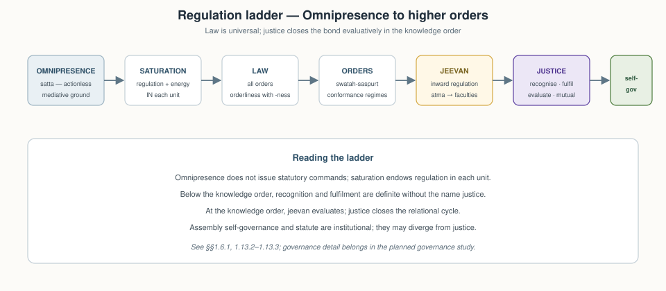
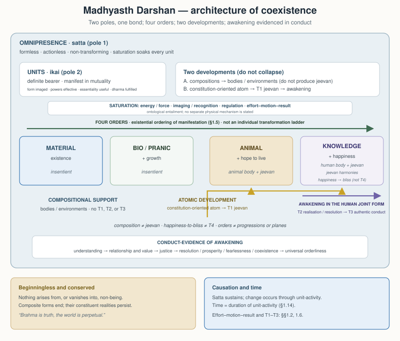
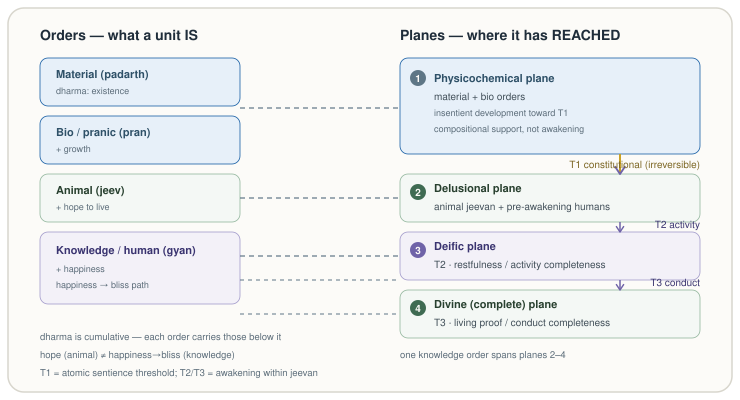
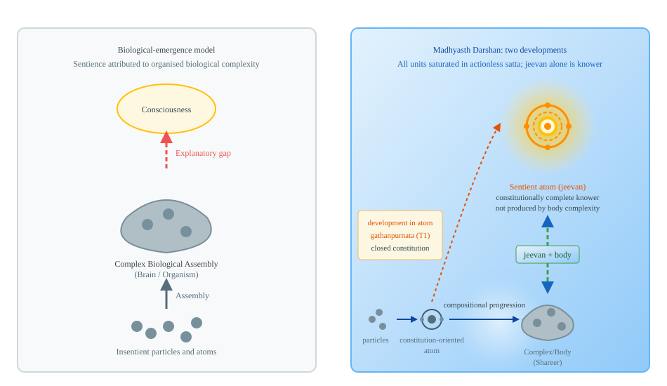
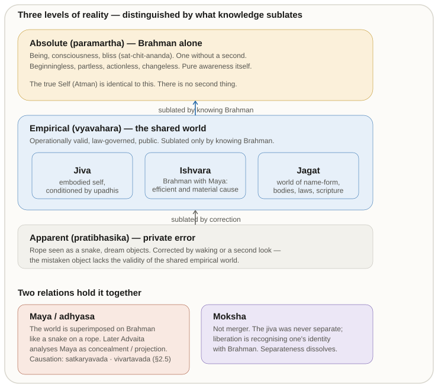
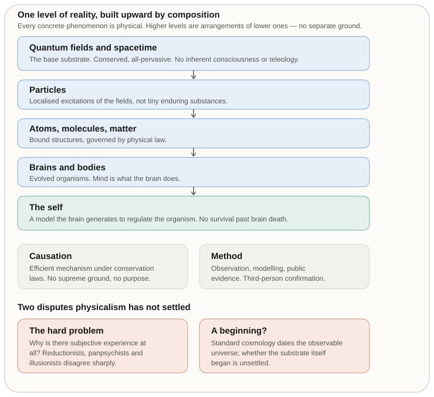

Author: AnalyticMadhyasthDarshan.org — a group of people studying Madhyasth Darshan philosophy. Source repository: raghavamohan/AnalyticMadhyasthDarshan.
Edited on: June 26, 2026, 8:33 PM IST The question: What is Existence? What exists? Does what exists begin at some time? Does the individual self (jeevan) begin or end with the body? Is the world finally real?
This study examines those questions in Madhyasth Darshan (Co-existentialism), as presented by Shri A. Nagraj, and compares its answers with Advaita Vedanta and selected modern philosophical and scientific approaches to physical reality, consciousness, and selfhood. Full treatment of time (kaal), trikaalabadh, and spacetime physics is in Nature of Time; here only the core claim is stated — that kaal is duration of unit-activity and satta is timeless as ground (§1.4).
These studies are written from the standpoint of a scientist and technologist — someone trained to graduate-level physics and mathematics, at home with contemporary cosmology, quantum theory, conservation laws, and the logic of formal models.
From that background, a familiar picture of nature is hard to avoid: consciousness appears as something the brain does — an epiphenomenon, functional outcome, or emergent property of particular configurations of very large numbers of physical particles. Modern physics and cognitive science are powerful on mechanism, prediction, and public evidence; yet the hard problem of consciousness, the status of the self, and the reality of value remain fiercely contested. The standpoint taken here does not treat those gaps as settled in favour of matter-only reductionism.
Those open questions motivate the comparative inquiry, but exposition follows the darshan’s own order: Madhyasth Darshan’s ontology is stated on its own terms first (§1), then Advaita Vedanta (§2), then modern philosophy and science (§§3–4), and comparison and critical review (§§5–6). Physics and the physicalist default are not narrated as if §1 were written outward from neuroscience; they enter as one leg of parallel testing once MD’s definitions are on the table. The study reads the primary texts carefully, states what follows from the darshan itself, and compares it in parallel with what we know from physics and the natural sciences, Advaita Vedanta, and modern Western philosophy (especially philosophy of mind). Advaita Vedanta is exposited before modern physicalism because it is the nearest non-physicalist rival sharing Indian vocabulary, even though the inquiry is motivated from the physicalist default. Physics and mathematics are one leg of that comparison, not the only one. The aim is rigorous comparative understanding — testing definitions, internal consistency, and fit with public knowledge — not persuasion or devotional endorsement.
The study develops Madhyasth Darshan’s ontology — saturation, causation, unit structure, the sentience threshold, and conservation — then compares it with Advaita Vedanta and selected modern views. It does not claim that physics, neuroscience, or comparative argument alone establish immortal jeevan, constitutional completeness, or continuity across bodily death. Where traditions use different criteria of knowing, the dispute is treated as partially incommensurable (§5.3.5); open points are collected in §6.2. These topical studies state the philosophy in clear, checkable prose first; a separate formal mathematical treatment may follow once the definitions are stable across the series.
Several claims the ontology depends on are argued fully elsewhere: the full-knowability thesis in Knowledge, Knower, and Known §1.11, and post-death continuity and evidence in §§1.12, 6.2.4, and §6.4. Ethics, society, spiritual practice, and the full kaal treatment are deferred to linked studies (Nature of Time and others). The primary base for this study is three English translations by Rakesh Gupta (MVD, SB, JV); relationship and value structure, cyclical economics, and some method vocabulary may be fuller in untranslated Hindi works such as Manav Vyavahar Darshan and Avartansheel Arthshastra, so coverage claims here are scoped to the translated corpus unless noted. Progression vocabulary includes niyati-kram and niyati-vidhi (named in Paribhasha Samhita; expounded here from MVD/SB/JV where those translations carry the doctrine). Institutional self-governance, dharma-niti / rajya-niti, public justice, and statutory social order belong in the planned study Governance Justice and Undivided Society and related social studies; How to Form Self-Sustaining Organizations applies the template in concrete assemblies — neither replaces the ontological account here. This paper states the full regulation ladder ontologically (§1.7), distinguishes law from justice (§1.10.1), and develops saturation through self-governance in §§1.7, 1.10; detailed assembly law, dharma-niti, and statutory social order are developed in the planned Governance study and applied templates. §1 can be read on its own; comparative conclusions that rest on those premises are marked where they arise.
| Term | Plain meaning |
|---|---|
| Coexistence (saha-astitva) | Reality as the pervasive ground (satta) and all units (ikai) inseparably present together — beginningless, without creation from nothing. |
| Satta (Omnipresence) | The formless, all-pervasive, non-transforming ground in which all units are saturated. Editorial Notes for translation conventions. |
| Unit (ikai) | A countable, bounded entity in nature — insentient (jada) or sentient (chaitanya). |
| Saturation (samprikt) | The ever-present bond in which each unit is soaked, submerged, and surrounded in Omnipresence; inherent energy and regulation belong in the unit. |
| Effort–motion–result (shram–gati–parinam) | The single inseparable triad in which all change appears (SB p. 58). |
| The four orders (chaar avastha) | Material, bio/pranic, animal, and knowledge/human — real developmental plateaus in nature. |
| Relationship (sambandh) | Definite mutuality with expectations predetermined toward completeness (MVD p. 62). |
| Law (ontological) | Orderliness and regulation read from saturation — universal across all four orders; not statutory command. |
| Jeevan | The sentient self: a constitutionally complete, immortal unit — atma as nucleus, buddhi–mun as orbital structure — that works through the body (§1.10). |
| Constitutional completeness (gathanpurnata) | When a developed atom integrates its required particles and crosses irreversibly into sentient jeevan (T1). |
| Existential progression (niyati-kram) | Fixed macro sequence in nature: pranic order from material, animal from pranic, knowledge/human from animal — not contingent reordering of plateaus (§1.5.1). |
| Way of existence (niyati-vidhi) | Definiteness in the conduct of each of the four orders; paired with niyati-kram (order emergence ↔ order conduct; §1.7). |
| Development progression (vikas-kram) | Atomic-level movement through the physicochemical complex until an atom reaches constitutional completeness and sentient jeevan appears (§1.9). |
| Awakening progression (jagriti-kram) | Sentient-level movement within constitutionally complete jeevan toward fuller activity and conduct (§1.9). |
| Jeevan values (sukh, shanti, santosh, anand) | Four felt harmonies within jeevan — happiness, peace, contentment, bliss — organised through faculty pairs (§1.10.2). |
| Utility value (upyogita) | Usefulness of natural abundance made available through labour; definite and constant across time (JV p. 123). |
| Art value (kala) | Aesthetic enhancement of utility — beautification along with usefulness (MVD p. 324). |
| Human values | Values of humane living grasped through coexistence understanding and humane conduct (JV pp. 44, 139); one of six value kinds (§1.6). |
| Established values | Relationship values — care, trust, affection, and the like — that flow when relationships are recognised (JV pp. 108, 138; §1.6). |
| Expression values | Right-use of body, mind, and wealth in the social order; civic values in Gupta’s English (MVD p. 306; §1.6). |
Further terms — planes, justice, prosperity, gyan registers — are defined where they first appear in §1.
| Term | Plain meaning |
|---|---|
| Brahman | The sole absolute reality — being, consciousness, bliss (sat-chit-ananda), one without a second. |
| Paramartha | Absolute level of truth; Brahman alone is absolutely real. |
| Vyavahara | Shared empirical order — bodies, law, ethics, scripture; robust but sublated at highest realization. |
| Pratibhasika | Private apparent error (rope-snake, dream objects); sublated by correction. |
| Mithya | Dependent appearance — neither absolutely real nor sheer nothing; valid at vyavahara, sublated at paramartha. |
| Maya | Cosmic power of concealment (avarana) and projection (vikshepa); Ishvara’s superimposition on Brahman. |
| Avidya | Individual ignorance — the jiva’s superimposition of body-mind on the Self. |
| Adhyasa | Superimposition — attributing what belongs to one level to another (snake on rope). |
| Satkaryavada | The effect pre-exists in the cause (clay already in the pot). |
| Vivartavada | Apparent transformation — Brahman does not change; name-form is projected. |
| Upadhi | Limiting adjunct conditioning the Self (body, mind, sheaths). |
| Turiya | The “fourth” — witness-consciousness beyond waking, dream, and deep sleep. |
| Sakshin | Witness — the seer that is never itself an object of perception. |
| Moksha | Liberation — recognition of pre-existing identity with Brahman, not merger of a real individual. |
| Term | Plain meaning |
|---|---|
| Physicalism | The view that every real, concrete phenomenon is physical — minds and selves are processes or organizations of physical systems. |
| Causal closure | Every physical event has a sufficient physical cause; no non-physical entity injects energy or intention into the physical order (Kim 2005). |
| Hard problem | Why and how physical processes give rise to subjective experience — the “something it is like” (Chalmers 1995; Nagel 1974). |
| Panpsychism | Experience is fundamental or ubiquitous in nature; wholly non-experiential matter cannot produce experience (Strawson 2006). |
| Combination problem | If micro-experientiality is primitive, how do micro-subjects combine into one unified macro-subject? |
| Illusionism | Phenomenal consciousness as usually conceived is a misdescription; only access-consciousness and functional states exist (Frankish 2016). |
| Personal identity | What makes a person the same individual over time — psychological continuity (Locke), reductionism (Parfit), or substance (soul, monad). |
| Scientific realism | The physical world exists mind-independently and is the proper object of public inquiry. |
| Neutral monism | Mind and matter are composed of a common neutral stuff, neither mental nor material in isolation (Russell 1921; Mach 1914). |
| Samadhanatmak bhautikvad | Resolution Centred Materialism — MD’s reframing of materialism: real matter saturated in Omnipresence, not consciousness-from-matter or matter-only reduction (SB). |
| Term | Plain meaning |
|---|---|
| Self-model | The brain’s internal representation of the organism as a unified subject — not an immortal unit but a regulative construct (Metzinger 2003). |
| Predictive processing / active inference | The brain as a hierarchical generative model minimizing prediction error; selfhood as functionally real control structure (Friston 2010; Clark 2016). |
| Integrated information (Φ) | IIT’s measure of how much a system’s cause–effect structure is irreducible; consciousness tied to a structural threshold (Tononi 2012). |
| Autopoiesis | Living organization as a self-producing network maintaining its boundary through metabolism (Maturana and Varela 1980). |
| ΛCDM | Standard cosmological model: cold dark matter plus dark energy; hot big bang ~13.8 billion years ago. |
| Quantum field | In QFT, what persists are fields; particles are localized excitations, not tiny enduring substances (Weinberg 1995). |
| Brain death | Operational criterion for end of personhood in medicine — irreversible loss of whole-brain function. |
| Entropy | Thermodynamic tendency toward disorder in closed systems; distinct from MD’s orderliness (vyavastha) at every order. |
| Natural selection | Differential reproduction of heritable traits; mainstream mechanism for biological adaptation and cooperation. |
Madhyasth Darshan defines existence as the ever-present coexistence of formless Omnipresence (satta) and countless bounded units of nature — beginningless, without creation from nothing, and indestructible at the level of being.
The account proceeds in layers. It begins with the two co-eternal poles and the bond of saturation between ground and units, then states what every unit is and how all change appears as unit-activity. It names the four orders of nature and the relationships in which units recognise and fulfil one another. From there it treats regulation and law, composition of larger units, and development toward sentience. The sentient self (jeevan), evaluative life, and knowledge in coexistence follow. The section closes with conservation, the perpetual world, and what fulfilled human living evidences at the knowledge order. The full architecture is summarised in the figure at §1.9.
Existence is always present as two inseparable sides: formless Omnipresence and formed units of nature. Neither side is made from the other. Neither came first. What changes is unit-activity, development, and awakening within coexistence. SB gives the most compressed formulation:
“What is evident is that consciousness and matter are inseparably present. Upon examining their fundamental nature, we learn that all of existence is essentially nature (matter) saturated in Omnipotence (consciousness). Here, ‘seeing’ is intended in the sense of understanding. Since nature saturated in Omnipotence is inseparably present, existence itself is eternally manifest in the form of coexistence.” - SB, p. 48
SB lists several English names for the same satta — Uniform Energy, Space (shunya), Knowledge (gyan), Consciousness, Omnipresence, Eternity, God, and Absolute Energy (SB, p. 48). No single English word covers all of them. Consciousness and Knowledge here do not mean a mind that knows; sentience as the activity of a knower belongs to jeevan, not to Omnipresence itself (Editorial Notes; §1.11).
Realisation Knowledge (anubhav jnan) names the ontological given stated in the quotes below — saturated units with form, properties, essential nature, dharma, and orderliness. Four distinct knowledge registers in the texts are kept apart in §1.11.
Realisation Knowledge expresses this inseparable presentness:
“Sentient and insentient nature saturated in Omnipotence. The countless sentient and insentient units are saturated in Omnipotence (Omnipresence).” - MVD, p. 11
“All units saturated in the Omnipresence (permeative and transparent) have form, properties, essential nature & dharma, and have inherent orderliness & participate in overall orderliness.” - MVD, p. 11
Existence thus has two inseparable aspects:
Omnipresence (Satta / Vyapak): The formless, all-pervasive, non-transforming, immeasurable reality. It is described as actionless energy (kriya-shunya urja): it performs no actions, yet its permeative presence is the ground through which units are energized, regulated, and conserved.
“Omnipotence is not confined within any dimension of length or breadth, nor can any measure be established for it; therefore, Omnipotence is all-pervasive.” - SB, p. 49
Units of nature: The formful, active, countable, bounded entities — each with determinate reality.
“Nature, saturated in Omnipotence, exists as countless units. Each unit, being saturated in Omnipotence, remains surrounded, submerged, and soaked in it.” - SB, p. 48
Nature names the saturated whole of formful existence; units are the countable entities within it — each bounded from six directions yet inseparably present in coexistence (MVD, pp. 11, 34).
Omnipresence is sthitipurn (state-complete): eternally present, without motion, wave, or pressure. Nature saturated in it is sthitishil (state-dynamic): the countless units whose activity, development, and awakening constitute all change (SB, pp. 50, 68–69). Satta does not progress; only unit-activity within saturation does.
The source describes units as soaked, submerged, and surrounded — samprikt — in Omnipresence. Saturation is the ever-present ontological bond between formless satta and each formful unit. Omnipresence does not act, transform, or be consumed in saturating a unit.
One way to picture the bond — illustrative, not identity — is a living cell in nutrient medium, or a sponge fully soaked in water: the unit remains surrounded, permeated, and sustained through the medium, not drained from a finite store. Satta is actionless (kriya-shunya), non-transforming, and not a physical substance that acts on units.
Through saturation, every unit has inherent energy and regulatory order in it:
“Every unit in its atomic state is active as orderliness, because it has inherent energy due to being saturated in Omnipotence.” - SB, p. 69
“Unit + Energy fullness = Activeness.” - SB, p. 69
Basic impulsion is each unit’s inherent drive to be active, given saturation — not an external push. SB and MVD state the reciprocal structure of manifestation:
“Thus, without basic impulsion, the energy remains unmanifest, and without the energy, there is no basic impulsion.” - SB, p. 62
“Without absolute energy, there is no basic impulsion in matter, and without matter, absolute energy is not revealed. Nature is eternally present in absolute energy.” - MVD, p. 40
Mutual dependence for manifestation means that the ground’s uniform energy and unit-activity always appear together. You do not get one without the other. Neither pole creates the other’s existence — only its manifestation. Saturation is where a unit gets its regulation, activeness, and forcefulness (SB, p. 57). This does not come from an outside push, like one object hitting another.
Satta is actionless in itself, yet called energy because unit-activity manifests through basic impulsion.
Every saturated unit carries the same four inseparable aspects — form, properties, essential nature, and dharma — regardless of order. They are not optional descriptors; they are what each unit is as a participant in coexistence (MVD, pp. 50–51).
Form (roop) is shared across all orders — shape, volume, and density by which a bounded unit is individuated (MVD, pp. 50, 112).
Properties (gun) name the effects units have on one another in mutuality, differentiated as generative, degenerative, and mediative — assisting creation, dissolution, and sustainment (MVD, pp. 50–51).
Essential nature (svabhav — Editorial Notes; not Buddhist svabhava) is how the usefulness of a unit’s properties participates in its order (MVD, pp. 50–51, 112).
Dharma names what a unit cannot be separated from — its innateness and fulfilment (SB, p. 50). Since existence is coexistence, indestructibility itself is the ultimate dharma.
SB opens with three companion facts:
“Each unit is a whole along with its environment.” - SB, p. 13
“Each unit is orderliness with its ness and participates in overall orderliness.” - SB, p. 13
“Each unit moves towards ‘development’ in its natural state and ‘decline’ in its excited state.” - SB, p. 14
Unit + environment = the unit as a whole signifies continuity (SB, p. 51). Ness is what makes a unit the kind of unit it is — its distinctive way of being, shown through essential nature when it is in its natural state (SB, p. 54).
In its natural state, a unit moves toward development — fulfilment aligned with its innateness. In its excited state, it moves toward decline (SB, pp. 14–15). A molecule whose relationships stay fulfilled persists in its natural state; when relationships break down, the assembly declines — the same rule developed for composition in §1.8.
Participation means recognising and fulfilling — observable even in the physicochemical realm, where components within an atom recognise and fulfil one another (SB, p. 123). Endeavour aligned with a unit’s innateness moves toward fulfilment; endeavour against it gives rise to problems (MVD, p. 112).
JV illustrates definite conduct: a peepal tree maintains its conduct with all its fruits, seeds, and leaves exhibiting peepal’s properties, intrinsic nature, and dharma (JV, p. 113). Harmony among the four aspects is what MVD calls the essence of coexistence itself (MVD, p. 21).
All change in coexistence is unit-activity — the single inseparable triad of effort, motion, and result (shram–gati–parinam):
“Every physical-chemical activity is an inseparable presence of effort, motion and result. Each of these is a joint form of the other two.” - SB, p. 58
Effort, motion, and result are not three sequential steps but three inseparable aspects of one activity. Sodium and chlorine ions approaching one another: the approach is effort and motion together; the stable salt crystal is result — yet after reciprocal exchange both parties attain satisfaction or natural motion (svabhav gati), cyclical restoration to natural state rather than one-way extraction (SB, pp. 52–53).
Two structural patterns follow in the insentient orders:
That reciprocity without one-way extraction is the ontological seed of cyclical economics (avartansheel arthshastra); SB develops the economic reading when physicochemical order is understood as mutual complementarity (SB, pp. 52–53, 111). Applied economics belongs in linked governance and society studies.
Mediative activity — the hidden energy that normalises generative and degenerative charge in mutuality — continuously works toward equilibrium because its aim is completeness (SB, p. 70).
The texts distinguish origination (units co-eternally present) from causation (what produces change when units transform). Omnipresence grounds all units through saturation as supreme cause (mahakaran) in the sustaining sense — the ground of activity, not its trigger (MVD, pp. 288–289; SB, pp. 49, 62). The causal work of change is done by units themselves.
SB compresses saturation through development as an identity-chain — each link is identity (“itself is”), not an external push:
“Saturation in uniform energy itself is forcefulness, forcefulness itself is basic impulsion, basic impulsion itself is activity, activity itself is effort-motion-result, effort-motion-result itself is development and its continuity.” - SB, p. 62
In plain terms: each link is identity (“itself is”), not an external push — from saturation through forcefulness and basic impulsion to activity, the effort–motion–result triad, and development with its continuity.
At the sentient level the same triad is read toward stages of completeness; that reading is developed in §1.9–1.10 once the four orders and jeevan are in view.
Time (kaal) is the duration of unit-activity — inseparable from effort, motion, and result in active units, not a separate cosmic container alongside satta and units. Full treatment: Nature of Time.
Madhyasth Darshan names four orders in nature — material (padarth), pranic/bio (pran), animal (jeev), and knowledge/human (gyan). Each is a stable plateau in development. Higher orders include the dharmas of lower orders cumulatively (SB, p. 179; MVD, p. 115).
| Order | Essential nature (svabhav) | Dharma (cumulative) |
|---|---|---|
| Material (padarth) | integration–disintegration (sangathan–vighatan) | existence (astitva) |
| Bio (pran) | vitalising–devitalising (sarak–marak) | + growth (pushti) |
| Animal (jeev) | cruel–uncruel | + hope to live (jeene ki aasha) |
| Knowledge / human (gyan) | fortitude, courage, generosity, kindness, grace, compassion | + happiness (sukh) |
“Existence is not just physicochemical matter, but all physical, chemical and jeevan entities are inseparably present in Omnipresence.” - MVD, p. 5
The human being is a joint form of physical body (shareer) and sentient self (jeevan):
“Brahma (Omnipotence) is omnipresent, and jeevan-clouds are many.” - MVD, p. 13
In MVD, Brahma names the same all-pervasive satta as Omnipresence — not a separate creator god.
These are objective categories in nature, not human typologies. Each order cyclically manifests through saturation in a different mode (MVD, p. 289):
| Order | Cyclical manifestation through saturation |
|---|---|
| Material (padarth) | Units are active because of being in Omnipresence |
| Bio (pran) | Units have pulsation because of being in it |
| Animal (jeev) | Units have the hope of living because of being in it |
| Knowledge / Human (gyan) | Units are hopeful and conscientious because of being in it |
Countless means practical uncountability — real particulars, indefinitely many from any finite standpoint (SB, p. 49).
Madhyasth Darshan holds that existence is stable and that development and awakening are definite, with laws natural and inherent to being — not human-made conventions imposed on unstable matter (MVD, p. 5). At the scale of the four orders, that definiteness names a fixed existential progression (niyati-kram): the pranic order emerges from the material order, the animal order from the pranic, and the knowledge order from the animal — not as a contingent reordering of plateaus but as the guaranteed sequence in which order-level nature manifests on Earth. In coexistence, chemical composition on Earth gives rise to biological cells; vegetations and forests enrich; animal bodies, including the human body, and their traditions are established through that chain (MVD, pp. 8, 13). The definitions corpus names this macro chain niyati-kram (Paribhasha Samhita, ed. 2008; see References).
SB qualifies the macro chain without dissolving it: the biological order can revert to the material order after manifesting its essentiality, whereas elevation from material into biological order is not irreversible development in the same sense as constitutional completeness at the atomic level (SB, pp. 76–78). Lower tiers can cycle; the directional enrichment — material order elevated and manifest in biological form, biological and animal emergence on Earth as the basis for the knowledge order (SB, pp. 76–77) — remains the structural reading.
Paired with order emergence is the way of existence (niyati-vidhi): definiteness in the conduct proper to each order. What §1.7 develops as result-, seed-, species-, and sanskar-conformance is the conduct side of the same architecture — niyati-kram names fixed order-to-order progression; niyati-vidhi names fixed order-specific conduct.
Saturation names the relation between Omnipresence and every unit. Existence also contains relations between units. Nothing in nature is isolated — “nothing is isolated – that is the principle” (JV, p. 43).
MVD defines a relationship as “the mutuality where expectations are predetermined in the sense of completeness” (MVD, p. 62), and contrasts it with association — “the mutuality where expectations are voluntary” (MVD, p. 61). Neighbours who share a wall have an association; parent and child, or complementary atoms in a bond, stand in a relationship with expectations toward completeness.
Essentiality in every order is value — what units reciprocate and mutually recognise in mutuality:
“Entire beingness implies the essentiality of units in every plane and order. Essentiality refers to value… It is values that are reciprocated and mutually recognised, as complementarity, mutual recognition, and impression occur only in mutuality.” - SB, p. 50
Value (mulya) is not one undifferentiated category. Essentiality names what units reciprocate; the texts sort that into six kinds (MVD p. 306; JV pp. 43, 138–139; The Coexistence Template D4). Gupta’s English on MVD p. 306 sometimes lists usefulness and aesthetics in one phrase and renders expression values as civic values; JV p. 138 treats usefulness and aesthetic value distinctly under object value spread everywhere — the table below follows the canonical six-fold split.
| Value type | What it is | Operates in |
|---|---|---|
| Utility values (upyogita) | Usefulness of natural abundance made available through labour; definite and constant across time | All orders; human–nature relation (JV pp. 123, 138) |
| Art values (kala) | Aesthetic enhancement that adds convenience to usefulness — activity of aesthetics with usefulness (MVD p. 324) | All orders where production layers aesthetics on utility |
| Jeevan values | Happiness (sukh), peace (shanti), contentment (santosh), bliss (anand) — harmonies within the sentient unit across faculty pairs | Knowledge order; developed in §1.10.2 (JV p. 138) |
| Human values | Values of humane living grasped through coexistence understanding — comprehending existence as coexistence and embodying humane conduct with confidence (JV pp. 44, 139); distinct from internal jeevan harmonies and from relationship-content values | Knowledge order |
| Established values | Care (mamta), guidance (vatsalya), trust (vishwas), affection (sneh), gratitude (kritagyata), glory (gaurav), love (prem), reverence (shraddha), respect (samman) — relationship values that flow when relationships are recognised | Knowledge order; mutuality (JV pp. 108, 138) |
| Expression values (civic in MVD/JV) | Right-use of body, mind, and wealth; conduct evidencing values in the social order | Knowledge order; assembly participation (MVD p. 306) |
Impression names the describable event in which one unit’s activity registers on another in mutuality — alongside complementarity and mutual recognition.
Every unit recognises its relationships and fulfils them through capacity (kshamata), ability (yogyata), and receptivity (patrata) at the level of its order (MVD, p. 62):
“Every entity of nature recognises another; that is why it fulfils. An atomic particle too recognises another, and as a result, these particles abide in orderliness.” - JV, p. 69
The completeness drive (SB, p. 51) turns unit-activity toward fulfilling relationships, step by step, at higher levels. Units move toward satisfaction by recognising and fulfilling relationships built into coexistence — not by maximising an abstract quantity. When those relationships are fully evident across nature, the texts call that realisation in coexistence (SB, p. 51): not a new state of the ground, but fulfilment made clear within coexistence.
In the first three orders, units fulfil definitely — structural, seed, or species conformance (JV, pp. 48, 113). In the knowledge order, fulfilment runs through knowing → believing → recognising → fulfilling, then evaluation and choice (JV, p. 48; MVD, p. 77). It must be achieved, not only structurally given.
At every order, fulfilment evidences use, right-use, and purposeful-use (MVD, p. 27). What counts as fulfilment differs by order because each order’s dharma and mode of lawful conformance differ.
| Order | What fulfilment evidences | Plain outcome |
|---|---|---|
| Material (padarth) | Use, right-use, purposeful-use; complementary exchange → satisfaction (MVD p. 27; SB pp. 52–53) | Stable composition; orderliness in atoms and molecules; no one-way depletion |
| Bio (pran) | Same use triad; seed-conformance; dharma includes growth (pushti) | Vital balance; persistence in natural state |
| Animal (jeev) | Same use triad; species-conformance; hope to live | Definite species conduct; cruel–uncruel balance |
| Knowledge / human (gyan) | Use triad plus evaluative closure when values are assessed and relationships close (MVD p. 62) | Conduct and thought aligned with coexistence — developed in §1.10.1 and §1.13 |
Capacity (kshamata) sets the scope for participating in a relationship; ability (yogyata) converts that scope into effort; receptivity (patrata) determines whether values register and fulfilment (nirvaha) can complete. In lower orders the three operate definitely; in humans, awakening or decline depends on how they are used (MVD, pp. 79, 134). Atomic bonding — hungry and overfull atoms complementary (MVD, p. 8) — is relationship-recognition at the material tier.
Saturation provisions inherent energy and regulatory order in each unit. The regulation ladder reads that bond upward: saturation → law → order-specific conformance → inward regulation in jeevan → justice (nyaya) as evaluative closure in the knowledge order → assembly self-governance. Satta does not descend as statutory command.
“Regulation itself becomes clear in the form of law. Consequently, there is provision in every unit for recognising one another based on law. This itself is the meaning of regulation.” - SB, p. 57
“Omnipotence is mediative, therefore the nature saturated in it is regulated and conserved. The nucleus within every atom is the mediative activity, whereby the atom’s generative-degenerative activities and relative powers are regulated and conserved.” - MVD, p. 26
Orderliness (vyavastha) at the level of co-existing orders is self-regulation (swatah-saspurt) — inherent in nature’s orders, not dispensed by a cosmic governor.

Law names how regulation and orderliness are already structurally real in coexistence — the law of orderliness with ness, expressed in order-specific conformance regimes. The definiteness of conduct at each order — the modes tabulated below — is what the texts call niyati-vidhi; it is the conduct-side counterpart to macro niyati-kram (§1.5.1):
| Order | Conformance mode | Definite or achieved |
|---|---|---|
| Material (padarth) | Result- / structural-conformance | Definite |
| Bio (pran) | Seed-conformance | Definite |
| Animal (jeev) | Species-conformance | Definite |
| Knowledge / human (gyan) | Sanskar-conformance | Achieved through knowing → believing → recognising → fulfilling |
Below the knowledge order, lawful recognition and fulfilment need no separate name for evaluation. Once jeevan must evaluate and can err, the texts name the evaluative closure of the relational cycle justice (nyaya). The six perspectives (drishti) through which humans evaluate are developed in §1.10.1. Statutory and public law (dharma-niti, rajya-niti) codifies assembly order separately; conduct may satisfy legality while violating justice. Institutional governance belongs in the planned Governance Justice and Undivided Society study.
When complementary units fulfil their relationships, they compose into larger units:
“Everywhere, there exists a natural inclination towards coexistence. This inclination is what leads atomic particles to assemble into atoms, atoms to combine into molecules, and molecules to combine into molecular forms.” - JV, p. 67
In a mixture (mishran), components maintain their respective conducts. In a compound (yaugik), components combine in definite proportion and present a genuinely new unit with its own four-aspect signature (MVD, p. 42).
Composition is not development. The developmental plateau is crossed only when an atom reaches constitutional completeness. Assemblies persist while relationships are fulfilled in their natural state and decline when they are not (SB, p. 14). Transmission of composition method (rachna vidhi) runs by constitution, seed, lineage, or education-sanskar according to order (JV, pp. 48, 82; MVD, pp. 92–93). Formal articulation: The Coexistence Template.
When assemblies are human compositions — family, community, and society — the same persist-or-decline rule applies, but recognition and fulfilment are achieved and evaluative rather than definite. Human assemblies, like molecules and bodies, are real compositions whose durability tracks relationship-fulfilment, not fear or extraction alone. Assembly-scale outcomes at awakened sociality are developed in §1.13.
Nature saturated in state-complete Omnipotence is oriented for development and awakening until realisation in coexistence (SB, p. 51). Four terms name progressions at different levels; they must not be collapsed:
MVD distinguishes development progression and awakening progression as actualities of coexistence alongside order-level enrichment (MVD, pp. 13–14). Molecules and larger assemblies participate in composition and in vikas-kram at the atomic scale; crossing T1 is not the same as the order-to-order chain named in niyati-kram.
In the sentient register, effort–motion–result maps to those stages: result toward constitutional completeness; effort toward activity completeness; motion toward conduct completeness (SB, p. 58). Sentient nature also works through projection and reflection toward relational closure (samadhan) at the knowledge order (SB, pp. 60, 64–65, 69).

Orders name what a unit is; planes (pad) name where development has reached (SB, p. 52). SB lists four planes:
| Plane | Plain meaning |
|---|---|
| Physicochemical | Insentient development toward constitutional completeness |
| Delusional | Sentient jeevan or pre-awakening human — body mistaken for self |
| Deific | Awakening human — activity completeness (T2) |
| Divine (complete) | Conduct completeness (T3) — living proof of coexistence |
“Delusional” here names a developmental stage in the texts, not psychiatric illness.

| Transition | Completeness stage | From → to | What becomes evident |
|---|---|---|---|
| T1 | Constitutional completeness (gathanpurnata) | Physicochemical → delusional | Sentient jeevan; hope to live |
T1 is irreversible at the atomic level (SB, p. 92). Molecules exhibit characteristics of development but not actual development; the sentient threshold is constitutional completeness of the atom (SB, p. 52).
An insentient atom (parmanu) — a composite of nucleus and orbiting particles (MVD, p. 42) — reaches gathanpurnata through particle incorporation, hungry and overfull complementarity, and environmental mutuality (MVD, p. 8; SB, pp. 58, 71). When the required particles are integrated, the atom becomes constitutionally complete: satisfaction within, by, and for that constitution — immortality of result and sentient status (SB, p. 59).
In this state there is neither increase nor decrease in particle count; the atom undergoes qualitative change without quantitative change (SB, p. 55).
Before constitutional completeness, an evolving-constitution atom carries molecular-bondage and weight-bondage. On crossing T1 it is liberated from both; hope-bondage replaces them as the sentient register’s defining bondage (MVD, p. 91; MVD, p. 117; SB, p. 114):
“An evolving-constitution atom is with molecular-bondage and weight-bondage. However, when the contraction and expansion activity increases in this atom, it instantly breaks free from its group and attains constitutional completeness, becoming a jeevan atom. The evidence of constitutional completeness is the jeevan atom’s liberation from molecular-bondage and weight-bondage, and its having the hope-bondage.” - MVD, p. 91
This is Madhyasth Darshan’s positive account of why the sentient unit is not an ordinary molecular composite subject to the same decay grammar as insentient bound states — not a settled claim in public physics (§6.2.4).
Tiered intelligibility: all saturated units participate in inherent orderliness. Insentient units exhibit radiance and projection (SB, p. 69). At gathanpurnata, a stable atom acts as a mediating configuration: orderliness shows up as active sentience. Sentience is not produced from dead matter. It becomes actual when the atom’s constitution is complete. Ever-present gyan in satta is actualized at that threshold — latency, not strong emergence from non-experience. Selection, grounding, and rival threshold accounts are developed in §6.2.11. The four registers of knowledge in coexistence are distinguished in §1.11.
Three completeness ladders run in parallel through §1.9–§1.10; the table below aligns them:
| Transition | Completeness (T) | Plane shift | Effort–motion–result (sentient register) |
|---|---|---|---|
| T1 | Constitutional (gathanpurnata) | Physicochemical → delusional | Result → sentience threshold |
| T2 | Activity (kriyapurnata) | Delusional → deific | Effort |
| T3 | Conduct (vyavaharpurnata) | Deific → divine (complete) | Motion |

Jeevan — the sentient self that works through the body (shareer) — is the constitutionally complete unit whose threshold was traced at T1. Animal-order jeevan and pre-awakening humans occupy the delusional plane; awakening to the knowledge order requires the human body as enabling medium — with fully enriched nervous system and imagination — not merely a vehicle any sentient plane could use (MVD, p. 115; JV, pp. 79, 93). Awakening moves a human through the deific plane toward the divine plane (§1.9).
MVD lists five inseparable aspects — mun, vritti, chitta, buddhi, and atma — within the jeevan-cloud (MVD, p. 13). They operate through the projection and reflection cycle (paravartan and pratyavartan):
| Strength / power | Projection (paravartan) | Reflection (pratyavartan) |
|---|---|---|
| Mun / hope | selection | taste (asvad) |
| Vritti / thought | analysis | deliberation |
| Chitta / desire | visualisation | contemplation |
| Buddhi | resolve (sankalp) | enlightenment (bodh) |
| Atma | authenticity (pramanikta) | realisation (anubhav) |
The five faculties are not optional layers added to an already-complete atom. They are the atom’s constitutional structure: atma is the nucleus; buddhi, chitta, vritti, and mun are the particles in the first through fourth orbits respectively (MVD, p. 78). JV presents the same structure as ten coordinated activities across nucleus and orbits — taste and selection in mun, deliberation and analysis in vritti, contemplation and visualisation in chitta, enlightenment and resolve in buddhi, and realisation and authenticity in atma (JV, p. 92). Functional indivisibility is structural: the faculties are the sentient atom’s parts in their proper orbits, not a conventional aggregate.
“The nucleus of the sentient unit (a constitutionally complete atom) is referred to as atma. The particles in its first orbit are referred to as buddhi, those in the second orbit are referred to as chitta, those in the third orbit are referred to as vritti, and those in the fourth orbit are referred to as mun.” - MVD, p. 78
Evaluation through six built-in perspectives (drishti) is developed in §1.10.1. The four felt harmonies within jeevan follow in §1.10.2.
Only jeevan in the knowledge order evaluates (JV, p. 70). It does not use a single lens. Jeevan’s design includes six perspectives for knowing, believing, evaluation, and choice. In awakening, humane refuge reorganises under nyaya, dharma, and satya rather than priya, hita, and labh (MVD, pp. 27, 67).
“All human behaviour is manifest in six perspectives: - (1) pleasant-unpleasant, (2) healthy-unhealthy, (3) profit-loss, (4) justice-injustice, (5) dharma-adharma, and (6) truth-untruth.” - MVD, p. 67
“The behaviour of humans with inhumane perspective is in the refuge of pleasant-unpleasant, healthy-unhealthy, and profit-loss. The behaviour of humans with humane perspective is in the refuge of justice-injustice, dharma-adharma, and truth-untruth.” - MVD, p. 67
Each perspective becomes clear with respect to a definite domain (MVD, p. 66):
| Perspective | Becomes clear with respect to | Role in evaluation |
|---|---|---|
| Priya–apriya | Instincts / sense-objects | Lower refuge; not enough as the main standpoint |
| Hita–ahita | Body | Same |
| Labh–alabh | Material goods and comforts | Same |
| Nyaya–anyaya | Behaviour (vyavahar) | Humane refuge; regulates conduct |
| Dharma–adharma | Resolution (samadhan) | Humane refuge; disciplines thought |
| Satya–asatya | Realisation in existence | Humane refuge; grounds assessment in what is ultimately real |
The lower triad is legitimate in its domain — food and instinct, bodily health, livelihood — but not sufficient as the organising refuge of a knowledge-order being. Awakening subordinates rather than abandons those domains: pleasant, healthy, and profitable outcomes stay meaningful when ordered under justice, dharma, and truth (Ethics and Morals in Human Beings §3.2).
Unit dharma (§1.3) — the fourth aspect of every unit’s signature — must not be confused with the dharma–adharma perspective: the latter is an evaluative drishti on thought and resolution, not the innateness and fulfilment of a unit as such.
The three humane perspectives regulate distinct registers of evaluative life (MVD, p. 137):
“The regulation of human behaviour takes place through justice, discipline in thoughts takes place through dharma, and realisation takes place only through truth.” - MVD, p. 137
| Register | Humane perspective | What evaluation disciplines |
|---|---|---|
| Conduct | Nyaya–anyaya | Behaviour in relationships — just or unjust |
| Thought | Dharma–adharma | Deliberation and intention toward resolution |
| Realisation | Satya–asatya | Whether assessment is grounded in coexistence as it is |
Justice (nyaya) has a dual role. As a perspective, it assesses behaviour as just or unjust. As an ontological term, justice names the full relational activity when the cycle closes: relationships recognised, values fulfilled, evaluation done, mutual satisfaction reached. Justice is not trust, respect, or a moral value among values. The nine established values (§1.6) flow in relationships; justice is what happens when that flow is complete and assessed as such.
“Recognising relationships, fulfilling values, evaluating, and achieving mutual satisfaction is justice.” - MVD, p. 311
Dharma as evaluative perspective disciplines thought toward resolution (samadhan). Satya grounds assessment in realisation in existence rather than in liking, bodily expedience, or gain. Deliberation and visualisation from the humane triad are balanced vritti and yathartha chitta; stuck in the lower triad they are unbalanced and unreal (MVD, pp. 71, 126–127) — developed in Ethics and Morals in Human Beings §3.2.
Below the knowledge order, recognition and fulfilment are lawful and definite without bearing the name justice, because evaluation and the possibility of error are not yet in play. In the knowledge order, justice, dharma, and truth structure how jeevan evaluates — conduct, thought, and realisation — as the humane refuge built into jeevan’s design.
| Register | Scope | Ontological status |
|---|---|---|
| Regulation / law | All four orders | Inherent in saturated units; same law of orderliness with ness |
| Justice (nyaya) | Knowledge order | Complete relational activity: recognise, fulfil, evaluate, mutual satisfaction |
| Statutory / public law | Assemblies, society | Institutional codification; may diverge from justice |
Formal structure: The Coexistence Template and Category Theory Explained.
The faculty cycle is organised around what jeevan experiences, not only what it projects and reflects. JV names four jeevan values — happiness, peace, contentment, and bliss — as harmonies between faculty pairs:
“Among the values, jeevan values are known by the names — happiness, peace, contentment and bliss, which are only names of the state of harmony within jeevan. Happiness is when there is harmony in mun and vritti, peace is when there is harmony in vritti and chitta, contentment is when there is harmony in chitta and buddhi, and bliss is when there is harmony in buddhi and atma.” - JV, p. 138
MVD states the same progression as effects of atma realised in truth on the lower faculties — taste (asvad) in mun registers as happiness; enthusiasm or peace in vritti; rejoicing or contentment in chitta; immersion or bliss in buddhi (MVD, p. 101). The taste reflection of mun in the projection–reflection table above is therefore not a bare sensory datum but the register where sukh first appears in the cycle. Awakening means retaining happiness, peace, and contentment as human goals are evidenced (JV, pp. 61–62); bliss follows as understanding becomes ingrained in tradition.
“The mode of channelling jeevan’s energies towards development (awakening) is through curiosity in mun, enthusiasm in vritti, delight in chitta, elation and immersion in buddhi, and finally, realisation in atma. For this, inward regulation of jeevan energies is essential.” - MVD, p. 77
Inward regulation is self-regulation within the sentient unit — mediative atma at the nucleus disciplines the orbital faculties and body (MVD, p. 277). This is the sentient register of the same mediative nucleus structure named at the atomic level in §1.7 (MVD, pp. 26, 78) — identity at two scales, not mere analogy.
Delusion on the delusional plane confuses body with self: atma is the “I” at the nucleus; the inseparable orbital set buddhi–chitta–vritti–mun is “mine”; awakening is these four coming into accordance with atma (MVD, p. 78; §1.10 above). Mistaking the body for the self is the root of that confusion (SB, pp. 91–92). Jeevan does not sleep when the body sleeps; values and evaluation are jeevan’s practical purpose. At the knowledge order, perceiver status (drishta pad) — enlightenment and realisation within the truth of coexistence — is what awakened humans attain. Activity completeness (T2) and conduct completeness (T3) evidence it in orderliness with ness and living proof (SB, pp. 137–138, 159).
“Jeevan continues to exist even after death as it does while driving a body.” - JV, p. 20
Post-death continuity is philosophical inference within the darshan (§6.2.4, §6.4).
| Transition | Completeness stage | From → to | What becomes evident |
|---|---|---|---|
| T2 | Activity (kriyapurnata) | Delusional → deific | Awakened humans; orderliness with ness |
| T3 | Conduct (vyavaharpurnata) | Deific → divine (complete) | Awakened humans with evidence (pramanikta) |
Four registers must be kept apart when reading the texts on knowledge:
Gyan as satta names relational, evaluatively structured orderliness — not merely statistical regularity. Orderliness in all saturated units and active sentience at gathanpurnata are distinct registers. Epistemic evidence: Knowledge, Knower, and Known.
Madhyasth Darshan advances two conservation claims that must be kept apart.
Coexistence conservation holds that what exists does not arise from non-being (abhava) and does not vanish into it — only configurations, bodies, and associations begin and end (§4.4). Conservation is asserted of each existing particular through configuration change.
Jeevan persistence is a separate commitment — inferred from constitutional immortality together with conservation (JV, p. 20; MVD Reality proposition 9; §6.2.4, §6.4).
Existence is beginningless:
“That which exists continues to be, and that which was not, does not come into existence. Therefore, existence will remain as it is till eternity.” - SB, p. 49
“Nothing arrives at birth nor does anything depart with death. All that is, exists forever.” - JV, p. 20
Underlying vastu persists through transformation (roopantaran), never annihilated into absolute non-being.
MVD compresses the positive ontology:
“Brahma is truth, the world is perpetual.” - MVD, p. 13
Madhyasth Darshan’s jagat satat (perpetual world) stands in structural contrast with Advaita’s jagat mithya (§5.7). Coexistence as an organic whole does not dissolve plurality into the ground: Brahman (satta) remains state-complete while countless units remain state-dynamic, each progressing as unit-and-environment toward completeness. Realisation in Omnipresence is coexistence evident in fulfilment — a perpetual structured world, not a world sublated at the highest truth.
At the knowledge order, the six drishti, the justice cycle (§1.10.1), and effort–motion–result toward resolution (samadhan) make explicit what is already built into unit relationships. Ethics is not an optional layer on an indifferent material base.
What coexistence builds in must be distinguished from what humans achieve. Relationships carry expectations toward completeness; regulation and law are inherent in saturated units; the six perspectives and the justice cycle structure evaluation. None of this guarantees prosperity, trust, or order regardless of conduct. Delusion, legality without justice, accumulation detached from right-use expenditure, false learning stuck in doubt and mis-evaluation, and fear as lack of wisdom remain live failures at the knowledge order (MVD, pp. 263–264). The ontology states what successful human living evidences when the relational cycle closes — not automatic outcomes under coercion or survival-optimisation alone.
JV names the human goal in four terms:
“The goal of jeevan is happiness, and the human goal is resolution, prosperity, fearlessness, and coexistence. Ethics are essential for achieving these goals and give them purpose.” - JV, p. 165
Jeevan’s own goal is happiness (sukh). Human living at the knowledge order evidences resolution, prosperity, fearlessness, and coexistence together. JV ties the two registers:
“The values of awakened jeevan are: happiness, peace, contentment, and bliss. Human goals are accomplished by realising jeevan values. These goals are resolution, prosperity, fearlessness, and coexistence. When human goals are evidenced, jeevan values are also evidenced. Resolution = Happiness. We realise happiness wherever we are resolved, and we suffer wherever we are unresolved. Thereafter, we realise peace while evidencing resolution and prosperity in the family. We realise contentment by living orderly in society. We realise bliss in the course of evidencing our understanding.” - JV, p. 61
Awakening means retaining the four jeevan harmonies as the four human goals are evidenced — not treating happiness as a private mood detached from resolution in conduct. JV ties these goals to ethics — right-use of body, mind, and wealth — character, and values in relationships.
MVD contrasts animal collectivity under fear with awakened human sociality:
“The semblance of collectivity among animals is generally observed only in situations of fear. Under no circumstances is such collectivity observed in activities of study, production, or the maintenance of orderliness. In contrast, the foundational basis of sociality in awakened humans is living in resolution, prosperity, fearlessness, and coexistence.” - MVD, Ch. 4
Awakened humans commonly live with the desire-trio — progeny-motive, wealth-motive, reputation-motive — and evidence the four outcomes with restfulness (vishram). Resolution itself is restfulness, also named abhyudaya — comprehensive resolution, not merely private calm.
| Outcome | Plain meaning | Tied to |
|---|---|---|
| Resolution (samadhan) | Understanding and relational closure without residue; intellectual resolution and material prosperity as joint evidence of complete happiness (MVD, p. 106) | Dharma–adharma perspective (§1.10.1) |
| Prosperity | Material adequacy through production beyond need and right-use — not hoarding or profit-maximisation (MVD, pp. 106, 263) | Justice cycle in conduct |
| Fearlessness | Trust in the present; sociality not founded on fear | Contrast with animal collectivity under threat (MVD, Ch. 4) |
| Coexistence | Living with complementarity — among humans and with nature | Satya–asatya perspective; right-use toward undivided humankind |
When the justice cycle completes (§1.10.1), these four outcomes are what it evidences at the knowledge order. Individual conduct composes upward: family and community persist while relationships are fulfilled in their natural state and decline when they are not. MVD names the assembly-scale telos undivided society (akhand samaj), evidenced with universal orderliness when fear-bound groupings mature into humankind as one complementary whole (MVD, Ch. 4). JV names five dimensions of that orderliness — education-sanskar, justice-security, health-restraint, production-work, and exchange-reserve (JV, p. 110); institutional structure belongs in the planned Governance Justice and Undivided Society study. Activity completeness (T2) evidences orderliness with ness; conduct completeness (T3) evidences living proof (pramanikta).
Character, conduct, family formation, and institutional self-governance belong in linked ethics and society studies; the ontology here states what successful human living evidences when the relational cycle closes.
Madhyasth Darshan answers the study’s framing questions as follows:
| Question | Madhyasth Darshan answer | Developed in |
|---|---|---|
| What is existence? | Eternally present coexistence of satta and units | §1.1 |
| What exists? | Omnipresence and real sentient and insentient units | §§1.1, 1.5 |
| Does it begin? | No; bodies and configurations do | §1.12 |
| Does the individual self begin? | Jeevan does not begin at birth or end with death | §§1.10–1.12 |
| Is the world finally real? | Yes — jagat satat | §1.12 |
| Method of knowing | Staged study → experiment and practice → realisation with evidence in conduct | §§1.10–1.11; Knowledge, Knower, and Known |
What the darshan has established, on its own terms, is a coherent ontology of coexistence, saturation, unit structure, and conservation. What it has not established by public science alone is immortal jeevan or post-death continuity — those remain commitments tested against other criteria of knowing (§5.3.5, §6.4).
Advaita Vedanta holds that existence in the strictest, absolute sense is Brahman alone — one without a second (ekamevaditiyam). The world of names, forms, bodies, and relations is mithya — a dependent appearance operationally valid at the empirical level (vyavahara) but ultimately sublated at absolute reality (paramartha). The true Self (Atman) is neither born nor destroyed, because it is ultimately identical with this non-dual Brahman.
The account proceeds in layers. It begins with Brahman as absolute existence and Sat-Chit-Ananda, then separates the three tiers of reality (pratibhasika, vyavahara, paramartha). Maya, adhyasa, and causal doctrine (satkaryavada, vivartavada) explain how multiplicity appears on changeless Brahman. The empirical entities — Ishvara, jiva, and jagat — structure the shared world. Witness-consciousness (sakshin, turiya) names the irreducible seer discriminated from body and mind. Conservation, origination, and temporality divide timeless Brahman from law-governed vyavahara. Liberation (moksha) and the knowledge path state how the illusion of separateness is dispelled. The section closes with ethics, loka-sangraha, and what realization evidences at the empirical order. The full architecture is summarised in the figure at §2.5. Advaita terms are defined in Quick Glossary, Terms in §2.
“In the beginning this was Existence alone, One only, without a second.” - CU 6.2.1
Shankara glosses sat as:
“mere Existence, a thing that is subtle, without distinction, all pervasive, one, taintless, partless, consciousness” - CU 6.2.1, Shankara commentary
Advaita’s opening move parallels Madhyasth Darshan’s refusal of origination from non-being, but compresses the answer differently. The text rejects existence arising from non-existence:
“By what logic can existence verily come out of non-existence? But surely, o good looking one, in the beginning all this was Existence, One only, without a second.” - CU 6.2.2
At paramartha, only this one partless reality exists absolutely. Paramatman is not a second absolute beside Brahman — it is Brahman named from the empirical or devotional register, sublated together with Ishvara and jiva when superimposition is perfectly eliminated (VC, v. 244; §2.5).
A second classical formulation names existence not only as sat — bare being — but as Sat-Chit-Ananda: being-consciousness-bliss. These are not three realities added together; Brahman is one partless reality whose nature is expressed in three inseparable names.
“Brahman is Truth, Knowledge, and Infinity.” - TU 2.1.1
Shankara’s tradition reads satyam as being/reality, jnanam as consciousness, and anantam as the infinite. The anandamaya passage (TU 2.5) leads the seeker beyond even bliss-as-sheath to the Self beyond all coverings. Shankara states the mature formula in the Vivekachudamani:
“By that alone he comes to know his own Self as Existence-Knowledge-Bliss Absolute and becomes happy.” - VC, v. 152
The same triad recurs at v. 217, one of the most comprehensive Self-descriptions in the Vivekachudamani:
“That which clearly manifests Itself in the states of wakefulness, dream and profound sleep; which is inwardly perceived in the mind in various forms as an unbroken series of egoistic impressions; which witnesses the egoism, the Buddhi, etc., which are of diverse forms and modifications; and which makes Itself felt as the Existence-Knowledge-Bliss Absolute; know thou this Atman, thy own Self, within thy heart.” - VC, v. 217
In this scheme, sat names absolute being; chit names consciousness as the very nature of reality and Self, not a function of brain or mind; ananda names the intrinsic fullness of the Self, free from lack and dependence on objects. Advaita concentrates existence in one subject whose nature is being, consciousness, and bliss without a second.
The Mandukya Upanishad (MU, vv. 3–7) grounds this analysis in the three states (avastha-traya): waking, dream, and deep sleep — with turiya, the witness beyond all states, as ultimately real. This first-person ladder is not a map of Madhyasth Darshan’s four developmental orders (§1.5); it analyses how temporal states appear and are witnessed from within. Witness analysis is developed in §2.6; the Sat-Chit-Ananda contrast with distributed coexistence is developed in §5.6.
Advaita’s standard framework separates private apparent errors (pratibhasika, such as a rope mistaken for a snake) from shared empirical reality (vyavahara, which governs bodies, physical laws, ethics, and scripture) and the absolute truth of Brahman (paramartha). The mithya doctrine and the three-tier framework are related but distinct tools (Editorial Notes); both are needed to read Advaita’s ontology.
“A firm conviction of the mind to the effect that Brahman is real and the universe unreal, is designated as discrimination (Viveka) between the Real and the unreal.” - VC, v. 20
“The individual soul is itself and directly the Supreme Brahman, and nothing else.” - VC, v. 216
| Level | What exists? | Status of world / error |
|---|---|---|
| Apparent (pratibhasika) | Rope-snake, dream objects, private errors | Sublated by waking or correction |
| Empirical (vyavahara) | Bodies, minds, Ishvara, causes, duties, scriptures, science | Shared, law-governed; operationally valid; sublated only by brahma-jnana |
| Absolute (paramartha) | Brahman alone | World is mithya, dependent appearance |
At vyavahara, the world is not unreal in the way a hallucination is; it is unreal relative to Brahman — like a dream relative to waking. The world is not sheer nothing, nor absolutely real; it is mithya — dependent appearance. Later Advaita systematises this as anirvacaniya (“indescribable” as either absolutely real or sheer nothing); Shankara uses “neither sat nor asat” language without that compound (Editorial Notes). That status matters when comparing Advaita’s ethics and science with Madhyasth Darshan’s perpetual world (§2.9, §6.3).
The multiplicity of the world rests on Brahman through superimposition (adhyasa) — like a snake seen on a rope. Cosmic Maya conceals Brahman’s true nature (avarana) and projects the diversity of name-form (vikshepa). VC vv. 243–244 distinguish Maya (cosmic, Ishvara’s superimposition) from Avidya (individual, the jiva’s superimposition of body-mind on the Self). These are the structural concepts Madhyasth Darshan does not map to saturation (§5.7).
Advaita inherits satkaryavada from its Samkhya background: the effect pre-exists in the cause. The Chandogya clay teaching states the pattern:
“My dear, as by the knowledge of one lump of clay alone all things made of clay are known — for all transformation has speech as its basis, it being name, while clay alone is real — so, my dear, is this knowledge.” - CU 6.1.4
The Vivekachudamani compresses the same point:
“All modifications of clay, such as the jar, which are always accepted by the mind as real, are (in reality) nothing but clay. Similarly, this entire universe which is produced from the real Brahman, is Brahman Itself and nothing but That.” - VC, v. 251
At the empirical level, creation is vivartavada — apparent transformation of name-form on changeless Brahman. Brahman does not change; multiplicity is projected through Maya. The effect is not a real transformation of the cause. Creation is therefore not production from nothing; it is manifestation of names and forms on the basis of Brahman. Comparative causal doctrine across traditions is tabulated in §5.4.
The stock error of mistaking a rope for a snake illustrates Advaita’s theory of error (khyativada): the snake is neither real (it vanishes on knowledge) nor utterly unreal (it was genuinely experienced), but a projection on a real substrate — the same structure Maya writ large applies to the world until Brahman is known. Madhyasth Darshan treats error as removable misidentification within a fully real world, not an indescribable appearance over a sole reality (§5.7).
Because Advaita uses a three-tier framework, it posits several categories structurally necessary to explain the empirical world, even if they are ultimately sublated at the absolute level. These are the specific concepts compared against Madhyasth Darshan in §5.
Brahman is the sole absolute reality (paramartha) — pure, actionless awareness. Ishvara (Saguna Brahman) is Brahman associated with Maya, functioning as operative cause of name-form manifestation — not a creator ex nihilo. Ishvara is a vyavahara-level category sublated at paramartha (VC, v. 244):
“These two are the superimpositions of Ishwara and the Jiva respectively, and when these are perfectly eliminated, there is neither Ishwara nor Jiva.” - VC, v. 244
Jivatman (jiva) is the individual embodied soul — the true Self (Atman) conditioned by upadhis (limiting adjuncts such as body and mind), appearing as separate until realization. Advaita’s Pancha Kosha (five sheaths) language shares Upanishadic vocabulary with Madhyasth Darshan’s order-and-plane exposition, but the two five-fold structures do not match one-to-one (§5.7.2); here the point is only that empirical individuality is conditioned, not that layers are discarded as unreal equipment.
Jagat (nama-roopa) is the physical universe of names and forms — operationally valid at vyavahara, ultimately mithya at paramartha. Bodies, minds, causal order, scripture, and science belong to this shared tier until brahma-jnana sublates the apparent separateness of the world from Brahman.

The Drig-Drishya-Viveka (DDV) offers a rigorous seer-seen (drig-drishya) discrimination: whatever can be observed — body, sensations, thoughts — is “seen” and therefore not the seer (DDV, vv. 1–5). What remains is Sakshin, witness-consciousness — irreducible to matter and closer to Advaita’s first-person route against physicalism than devotional VC passages alone (see §3.2, §5.6, §6.3).
“This body, O son of Kunti, is called the field; he who knows it is called the knower of the field.” - BG, 13.1
“Know also that I am the Knower of the field in all fields, and the knowledge of the field also am I.” - BG, 13.2
In the Mandukya analysis, turiya — the fourth, witness beyond waking, dream, and deep sleep — plays the same structural role: not another state among states, but the awareness in which states appear (MU, vv. 3–7; §2.2). At liberation, that witness is discovered as non-personal Brahman — one partless awareness without a second. Madhyasth Darshan agrees that the seer is not the seen body or brain-state, but locates the irreducible knower in immortal jeevan with active gyan udghatan (§1.11), not in a universal Self that finally absorbs all individuality (§5.6).
Brahman does not begin: it is beginningless, partless, actionless, non-dual — outside temporal becoming (VC, v. 393). The universe as name-form has origination at the empirical level, but its ultimate truth is Brahman. Advaita’s classical cosmology treats vyavahara as beginningless — creation and dissolution cycle without a first moment — so the empirical world is not a fleeting illusion in the manner of a private error (pratibhasika).
Advaita does not devote a separate chapter to kaal, but its framework implies a sharp division. At paramartha, only Brahman is absolutely real; temporality belongs to the empirical order. At vyavahara, past, present, and future, birth and death, and causal succession are operationally valid — the world is law-governed and shared (§2.3) — yet finally sublated when Brahman alone is known.
The Mandukya analysis of waking, dream, and deep sleep (§2.2) is a first-person route into how temporal states appear and are witnessed; the witness (turiya) is not another state among them. Madhyasth Darshan accepts the reality of cyclical development and unit-activity across orders (§1.4–1.5) and refuses to sublate the world at the highest realization; its account of kaal as duration of activity (§1.4) is therefore closer to a realist temporal ontology at every order, while still denying that time is a substance independent of activity. Comparison with Advaita’s trikaal language and with Madhyasth Darshan’s trikaalabadh coexistence claim (SB, p. 48) is developed in Nature-Of-Time (§2.2, §4).
Liberation (moksha) is not dissolution or merger of a real individual into Brahman. The jiva was never a separate entity; realization is recognition of pre-existing identity with Brahman, in which the illusion of separate individuality is dispelled. The classical identity formula is tat tvam asi — “That thou art” (CU 6.8.7, with Śaṅkara’s bhāṣya); BS 1.1.2 treats the same doctrine systematically. VC compresses the pedagogy:
“There is neither death nor birth, neither a bound nor a struggling soul, neither a seeker after Liberation nor a liberated one – this is the ultimate truth.” - VC, v. 574
“The Supreme Brahman is, like the sky, pure, absolute, infinite, motionless and changeless, devoid of interior or exterior, the One Existence, without a second, and one’s own Self.” - VC, v. 393
Advaita inherits the classical analysis of valid knowledge (pramana). For the supreme truth of non-duality, verbal testimony (shabda) — the revealed word of the Upanishads, processed through reasoning and meditation — is finally competent; perception and inference operate within the subject-object duality to be transcended. The supreme path is classically threefold: hearing the scriptures (shravana), reasoning over them (manana), and sustained meditation (nididhyasana), under a qualified teacher. First-person discrimination (drig-drishya-viveka, DDV) complements scripture by negating everything that presents itself as an object until only witnessing awareness remains. Full epistemological comparison: Knowledge, Knower, and Known §2.
Shankara’s Vivekachudamani insists on ethical discipline as prerequisite to knowledge (VC, vv. 17–19). Ethics at vyavahara is developed as the section capstone in §2.9.
Advaita’s charge that the world is mithya at paramartha does not make ethics untenable at the level where life is actually lived. At vyavahara, ethics and compassion remain fully valid; realization of non-duality deepens rather than weakens them. The Bhagavad Gita, in Shankara’s commentary, grounds social responsibility in loka-sangraha — holding the world together — and ordained duty:
“Perform your bounden duty, for action is superior to inaction.” - BG, 3.8 (Shankara’s commentary: niyatam kuru karma; the enlightened still act for the welfare of the world)
What Advaita provisions at the empirical order must be distinguished from what realization evidences at paramartha. Ethics, scripture, causal law, and compassionate action prepare the mind for brahma-jnana; they are binding where humans actually live. None of this guarantees that the world retains final ontological weight at the highest truth — that dispute is with Madhyasth Darshan’s jagat satat (§1.12, §5.7).
| Domain | Valid at vyavahara | Status at paramartha |
|---|---|---|
| Ethics and duty | Binding; deepens with realization (VC, vv. 17–19; BG 3.8) | Sublated as means; non-dual identity remains |
| World and nature | Law-governed, shared, beginningless cosmology | Mithya — dependent appearance |
| Individual self | Real as embodied jiva under upadhi | Identical with Brahman; separateness dispelled |
| Relationships and society | Loka-sangraha, ordained action for world-welfare | Not ultimately separate from Brahman |
| Time and change | Past, present, future, birth and death operationally valid | Sublated when timeless Self is known |
Realization evidences identity with Brahman — the dispelled illusion of separate individuality, not Madhyasth Darshan’s four outcomes of resolution, prosperity, fearlessness, and coexistence (§1.13). The enlightened still act for world-welfare at vyavahara; what changes at paramartha is ontological status, not the possibility of ethical living. Madhyasth Darshan’s counter-reply — that robust ethics and beginningless vyavahara do not settle final world-realness — is developed in §6.3.
Modern Western philosophy takes physical nature as baseline and disputes how mind, self, value, and the world’s final status fit within it. The dominant materialist line holds that consciousness emerges from matter; metaphysical idealism has held the reverse. SB records that neither one-way emergence has been observed — what is evident is coexistence:
“In this course, metaphysical thought has held that matter arises from consciousness, whereas materialist thought has maintained that consciousness emerges from matter. Both ideologies have proposed numerous arguments, practices, and experiments in support of their claims. Yet, neither has matter been seen emerging from consciousness, nor consciousness emerging from matter. What is evident is that consciousness and matter are inseparably present.” - SB, p. 48
Madhyasth Darshan’s own title — Samadhanatmak Bhautikvad (Resolution Centred Materialism) — reframes rather than abandons materialism. Against dialectical materialism, which treats struggle as the engine of history and science, SB proposes an orderliness-centred materialism in which nature remains real, saturated in Omnipresence, and oriented toward resolution rather than perpetual conflict (SB, pp. 8, 44). The Western debates below are the philosophical context that framing answers.
The account proceeds in layers. It begins with physicalist ontology — what exists on a matter-first picture — then states the hard problem and the responses physicalists offer (panpsychism, emergentism, illusionism, eliminativism). Personal identity and persistence of the self follow. Origination, conservation, and world realism treat whether what exists begins and whether the world retains final weight. Alternative Western ontologies supply historical analogues to ground-and-units coexistence. The section closes with method and evidential stakes. The physicalist architecture is summarised in the figure below; comparative detail on time and cosmology is in Nature of Time and §4.

“I take physicalism to be the view that every real, concrete phenomenon in the universe is…physical.” - Strawson 2006, p. 2
On this view, what exists are physical things, events, fields, organisms, brains, and processes. Minds and selves are not separate substances but functions, organizations, models, or processes of physical systems. Reductive physicalism holds that mental descriptions reduce without remainder to physical descriptions; non-reductive physicalism allows autonomous mental or functional levels while insisting that every concrete instance is still physical.
Methodological naturalism extends the picture into inquiry: the methods of the natural sciences — observation, experiment, modelling, public replication — are the standard for settling factual claims about the world. Scientific realism treats the physical world as mind-independent and law-governed: electrons, fields, and brains are not mere useful fictions but the furniture reality is made of, even when descriptions revise with theory change. Constructivist and instrumentalist variants soften that claim; they remain minority positions within mainstream analytic philosophy.
Physicalism also asserts causal closure: every physical event has a sufficient physical cause, so no non-physical entity injects energy or intention into the nervous system (Kim 2005). That closure is what makes immortal jeevan working through the body a live dispute: if the brain is a closed physical system, a distinct sentient unit cannot be an independent causal partner without violating conservation or epiphenomenalism. Madhyasth Darshan locates jeevan as the sentient unit that works through the body, not as a ghost in the machine — but the physicalist still demands a third-person account of how that partnership is possible (§3.4, §6.4).
“The really hard problem of consciousness is the problem of experience. When we think and perceive, there is a whir of information-processing, but there is also a subjective aspect.” - Chalmers 1995, p. 3
“It is widely agreed that experience arises from a physical basis, but we have no good explanation of why and how it so arises.” - Chalmers 1995, p. 3
“the fact that an organism has conscious experience at all means, basically, that there is something it is like to be that organism.” - Nagel 1974, p. 1
The hard problem is not whether brains correlate with experience — they do — but why any physical process should have an inside at all. Advaita’s DDV offers a complementary first-person route: whatever can be observed — body, sensations, thoughts — is “seen” and therefore not the seer (DDV, vv. 1–5; §2.6). Madhyasth Darshan reads the explanatory gap as evidence that matter-only ontology is incomplete; physicalists often treat it as philosophically non-decisive — a gap in current theory, not proof of extra-physical being (§6.2.1, §6.4).
Some philosophers split the difference through property dualism: experience may be an irreducible property of certain physical systems while the laws governing matter remain intact. That fork preserves law-governed physics but adds a primitive experiential aspect Chalmers-style accounts find unavoidable. Madhyasth Darshan does not map cleanly onto property dualism: active chaitanya belongs to constitutionally complete jeevan, not to every complex physical system, and satta as gyan is not a property of particles (§1.11).
Physicalists who take the hard problem seriously divide into several families. Panpsychist physicalism (Strawson 2006) insists that experience cannot emerge from wholly non-experiential matter:
“Full recognition of the reality of experience, then, is the obligatory starting point for any remotely realistic version of physicalism.” - Strawson 2006, p. 2
“Experiential phenomena cannot be emergent from wholly non-experiential phenomena.” - Strawson 2006, p. 12
“Real physicalism, realistic physicalism, entails panpsychism.” - Strawson 2006, p. 12
This is closer to Madhyasth Darshan than reductive physicalism, since both refuse experience-from-dead-matter. Strawson’s anti-emergence principle presses on the gathanpurnata account: if experience cannot emerge from the wholly non-experiential, sentience at completeness must be actualized from an ever-present ground, not produced from nothing — the latency reading developed in §6.2.11. Madhyasth Darshan differs in scope: it does not say every particle is a subject; active sentience is the status of constitutionally complete atoms only.
Panpsychism’s combination problem bears directly on that restriction. If micro-experientiality is primitive, how do micro-subjects combine into a unified macro-subject? Strawson and other panpsychists leave this wound open; integrated information theory addresses it through structural integration, at the cost of pan-experiential commitments Madhyasth Darshan rejects (§4.2). Madhyasth Darshan’s answer is different in kind: one constitutionally complete atom is already the sentient unit — jeevan is not assembled from many micro-minds but is a self-maintaining composite whose completeness is functional indivisibility (§1.9–1.10). Whether that avoids the combination problem or relocates it to the threshold itself is examined in §6.2.11.
Emergentism offers a middle path: new properties appear at organisational thresholds — digestion from chemistry, life from biochemistry, mind from neural complexity. Weak emergence treats higher-level patterns as real but dependent on lower-level physics; strong emergence would add causally novel properties irreducible to microphysics. Threshold grammar — a structural condition producing a qualitative register — is shared by emergentism, integrated information theory, and gathanpurnata (§6.2.11). Madhyasth Darshan denies strong emergence from dead matter while accepting qualitative change at constitutional completeness; latency names ever-present gyan in satta actualized at the threshold, not a new experiential ingredient from nothing.
At the opposite pole, illusionism (Frankish 2016) and eliminative materialism (Dennett 1991; Churchland 1986) preserve physicalism by denying or re-describing the datum the hard problem presses:
“Another approach, which holds that phenomenal consciousness is an illusion and aims to explain why it seems to exist.” - Frankish 2016, p. 1
“illusionists deny the existence of phenomenal consciousness properly so-called, but do not deny the existence of a form of consciousness” - Frankish 2016, p. 8
Illusionists retain access-consciousness, self-report, and functional control while treating “what it is like” as a misdescription of introspective models. Eliminativists go further: folk-psychological categories such as belief and desire may fail to refer, to be replaced by neuroscience. Madhyasth Darshan treats experience, valuation, aspiration, and realization as activities of jeevan, not brain-model illusions. These views matter because they show how far naturalism will go to preserve a physicalist ontology — and because predictive-processing accounts (§4.1) offer a more sophisticated functionalist reply than bare elimination.
Physicalism’s answer to “does the individual self begin or end with the body?” is typically yes, in some version. The self is a biological and cognitive achievement — developing through embodiment, memory, and social recognition — and ceasing when brain function ends. Personal identity theory asks what, if anything, makes a person the same individual over time.
Locke’s classical account ties identity to psychological continuity — memory and connectedness of consciousness — rather than to sameness of material particles. Parfit’s later work argues that what matters in survival is psychological connectedness and continuity, not a further fact of identity: there is no deep entity beyond the stream of mental states that must persist (Parfit 1984; SEP Personal Identity). On reductionist readings, the question “is this the same jeevan after death?” has no fact of the matter beyond causal and psychological links — which bodily death breaks.
Substance views — rational soul as form of the body (§3.6.1), simple monads (§3.6.3) — preserve an enduring individual bearer. Madhyasth Darshan’s jeevan aligns with substance pluralism: a constitutionally complete, immortal unit that works through the body and persists across bodily death (§§1.10–1.12). Against physicalism, the dispute is not only metaphysical but causal: if the physical domain is closed, a non-physical jeevan is either epiphenomenal or a violation of closure. Self-model, predictive-processing, and integrated-information accounts in cognitive science (§§4.1–4.2) explain the sense of self without positing an immortal unit; Madhyasth Darshan’s counter is that regulation and representation do not settle what works through the brain (§6.4, §6.2.11).
Western philosophy asks whether what exists had a beginning and whether particulars endure through change. Mainstream physicalism holds that local systems — organisms, stars, civilisations — begin and end, while fundamental physics may or may not require a cosmic beginning (§4.3). Conservation principles in physics treat certain quantities as preserved through transformation — a structural parallel to Madhyasth Darshan’s claim that vastu persists through roop-change (§1.12, §4.4), though the categories differ.
Scientific realism answers “is the world finally real?” with yes for the physical universe: tables, fields, and brains are real mind-independent items suitable for public study. Idealism (Berkeley and successors) makes reality depend on perception or mind; nihilism denies that anything ultimately exists or matters. Both are outliers in contemporary analytic ontology but sharpen the stakes: Madhyasth Darshan’s perpetual world (jagat satat) is neither mind-dependent appearance nor physical reduction alone — units and Omnipresence are co-eternally real (§1.12).
Philosophy of time adds a further fork. Block-universe eternalism treats past, present, and future as equally real coordinates; presentism privileges the present. Relational theories deny time as an independent container — time is the order of change among things. Madhyasth Darshan’s kaal as duration of unit-activity is structurally closer to relational and process views than to block eternalism (Nature of Time §3). Cosmological questions about a beginningless substrate are developed in §4.3; the philosophical point here is that Western ontology has no consensus on whether existence as a whole begins, even when particular configurations do.
Before the twentieth-century focus on mind and brain, Western metaphysics developed several ground-plus-particulars schemes that map partially onto Madhyasth Darshan’s coexistence. They are ordered here from form-matter compounds through monism and pluralism to neutral ground — not as a historical timeline but as a ladder of analogues for §5.5.
Aristotelian–Thomistic hylomorphism maps form (forma) onto matter (materia) so that a substance is the compound of both — not mere aggregation. Aquinas treats the rational soul as the form of the living body (anima forma corporis), giving a joint ontology of soul-and-body that parallels Madhyasth Darshan’s jeevan–shareer joint form and the four-aspect unit signature (form, properties, essential nature, dharma) as what a unit is (§1.3). Gathanpurnata resembles substantial completion: a definite constitution at which a unit’s essential nature is fully actualized. The divergences are sharp: Madhyasth Darshan’s plural, immortal jeevan units, beginningless coexistence with satta, and saturation are not Aristotelian prime matter plus a single rational soul per body; yet the soul-as-form debate is a nearer cousin than process philosophy on individual persistence (SEP Form and Matter; Aquinas ST I, q. 75–76).
Spinoza’s substance monism offers a closer analogue to satta-with-units than neutral monism. For Spinoza, one infinite substance (Deus sive Natura) has infinitely many modes — finite particulars expressing the one substance under different attributes (thought and extension). Madhyasth Darshan likewise keeps a pervasive ground and countless real units, but the contrast is decisive: Spinoza has one substance whose modes are not ontologically on a par with the whole; Madhyasth Darshan has co-eternal satta and ikai, each real in its own right, bound by saturation rather than modal expression of a single substance (Spinoza, Ethics, Part I, Props. 14–15; Part II, Def. 3). Spinoza’s parallelism of thought and extension also differs from Madhyasth Darshan’s tiered intelligibility: active chaitanya belongs only to jeevan, not to every mode of extension.
Leibnizian monads offer a tighter analogue to plural immortal jeevan than Whitehead’s occasions. Monads are simple, individual substances that mirror the whole from their perspective, do not interact by efficient causation but harmonize, and do not naturally perish. That plurality-with-harmony and individual immortality align structurally with many distinct jeevan-clouds saturated in Omnipresence (MVD, p. 13). The contrast: monads are windowless and perception-based; jeevan works through bodies in definite sambandh and fulfils relationships in nature’s orders (Leibniz, Monadology, §§1–14, 78–81).
Whitehead’s process philosophy shares relational realism and refusal of nature bifurcation. His basic units are “actual entities” — “drops of experience, complex and interdependent” (Whitehead 1929, p. 28). The key contrast remains persistence: Whitehead’s occasions are momentary and “perpetually perish” subjectively, gaining “objective immortality” only as data for successors (Whitehead 1929, p. 44), whereas Madhyasth Darshan’s jeevan is a persisting immortal individual. Process metaphysics also treats time as internal to becoming — a partial affinity with activity-based kaal (§3.5; Nature of Time §3.3).
“Actual entities ‘perpetually perish’ subjectively, but are immortal objectively.” - Whitehead 1929, p. 44
Neutral monism (Russell, Mach) resembles Omnipresence as a reality that is neither mind nor matter but common ground. Russell holds that mind and matter are “composed of a neutral-stuff which, in isolation, is neither mental nor material” (Russell 1921, Lecture I). Mach likewise denies any “rift between the psychical and the physical”: “There is but one kind of elements, out of which this supposed inside and outside are formed” (Mach 1914, Ch. XIV). The contrast: neutral monism typically builds mind and matter out of the neutral stuff, whereas Madhyasth Darshan keeps Omnipresence non-transforming and lets units be real in their own right rather than constructed from the ground.
“Both mind and matter are composed of a neutral-stuff which, in isolation, is neither mental nor material.” - Russell 1921, Lecture I
“There is no rift between the psychical and the physical, no inside and outside… There is but one kind of elements, out of which this supposed inside and outside are formed.” - Mach 1914, Ch. XIV
Modern Western philosophy does not speak with one voice, but a typical physicalist constellation answers the study’s framing questions as follows:
| Question | Typical Western philosophical answer |
|---|---|
| What is existence? | Concrete physical reality — fields, spacetime, organisms — studied empirically; some add experience as fundamental (panpsychism) or neutral ground (neutral monism). |
| What exists? | Physical entities and their organisations; minds as processes; disputed whether experience is reducible, fundamental, or illusory. |
| Does what exists begin? | Particular systems begin and end; whether fundamentals had a first moment is unsettled (§3.5, §4.3). |
| Does the individual self begin? | The self develops with body and brain; psychological continuity does not survive bodily death on standard physicalist accounts (§3.4). |
| Is the world finally real? | Yes, for scientific realism — the physical world is mind-independent; idealism and world-as-illusion are minority views. |
| Method of knowing | Observation, argument, public evidence; first-person datum acknowledged but not treated as existence-proof for immortal units. |
What philosophy has established, on Madhyasth Darshan’s reading, is a high evidential bar and a persistent exposed point: the hard problem shows that reductive matter-only accounts leave experience unexplained. What it has not established is immortal jeevan, constitutional completeness, or post-death continuity — an explanatory gap is not an existence proof (§6.4.1–6.4.2). Predictive processing and self-model theories (§4.1) deepen the physicalist reply without settling the ontological dispute (§6.4.3).
Mainstream science inherits this physicalist baseline and adds measurement, formal models, and institutional replication — the subject of §4.
Mainstream science inherits the physicalist baseline of §3 and adds measurement, formal models, and institutional replication. Where philosophy disputes mind, self, and world-realness in argument, science operationalises those disputes through instruments, datasets, and peer review. SB records that humans seek to live with evidence through experimentation, behaviour, and experience — not through argument alone:
“Humans inherently seek to live with evidence through experimentation, behaviour, and experience. They desire to achieve comprehensive resolution — across various aspects, perspectives, directions, dimensions, and contexts of time and place.” - SB, p. 44
Madhyasth Darshan treats public science as one powerful leg of that evidence-seeking: powerful on mechanism, prediction, and correction. It adds realization and conduct as further evidence of understanding — the epistemic frame developed in Knowledge, Knower, and Known. JV notes that the human body is provisioned to evidence understanding, not merely to house brain activity (JV, p. 59).
The account proceeds in layers. It begins with mind, self, and predictive processing in neuroscience, then states consciousness-science threshold rivals (IIT, autopoiesis, competing programs). Cosmology treats whether the universe began. Quantum fields and conservation address what persists through transformation. Spacetime and entropy contrast physical time and disorder with kaal and vyavastha. Evolution and ecology treat adaptation and cooperation as biological mechanisms. The section closes with method and what science establishes. Detailed time physics is in Nature of Time; critique of scientific limits is in §6.4.
Self-model theories in cognitive science (Metzinger 2003) build on the physicalist premise that the self is not an immortal unit but a predictive model the brain generates to regulate the organism:
“minimal selfhood emerges as the result” - Limanowski and Blankenburg 2013, p. 1
“these accounts propose to ‘understand the elusive sense of minimal self in terms of having internal models that successfully predict or match the sensory consequences of our own movement, our intentions in action, and our sensory input’.” - Limanowski and Blankenburg 2013, p. 3
The most developed recent form is predictive processing and active inference: the brain as a hierarchically deep generative model that minimizes prediction error (surprise) by updating beliefs and guiding action (Friston 2010; Clark 2016). On this view, valuation, aspiration, the sense of being a continuous self, and the felt reality of the world are not dismissed as mere illusion; they are functionally real control structures — layered expectations that keep the organism viable. Seth (2021) extends the picture: conscious selfhood is the brain’s “best guess” about its own embodiment, a controlled hallucination tuned by interoceptive and sensorimotor evidence.
For Madhyasth Darshan this is nearly the opposite of the jeevan ontology: the self is a real sentient unit using the body, not a model generated by embodied prediction. Science’s operational criterion for when that regulative process ends is brain death — irreversible loss of whole-brain function. On that standard, the person ceases when neural integration fails; there is no post-death survival of the self for medicine to measure. Madhyasth Darshan answers the self-model rival through latency: sentience is actualized from the ever-present ground at constitutional completeness, not generated as a new ingredient from dead matter (§6.2.11). Predictive models explain how a body self-regulates; they do not settle whether the regulator is only neural tissue or a distinct jeevan working through the brain (§6.4.3, §5.3.5).
Integrated Information Theory (IIT) proposes that consciousness corresponds to integrated information (Φ) in a system, with a quantitative threshold producing a qualitative difference — “an experience is a maximally irreducible conceptual structure” (Tononi 2012). IIT is a useful physicalist mirror of threshold grammar: like gathanpurnata, it ties consciousness to a structural condition. The contrasts are decisive: IIT is pan-experiential at the fundamental level in many formulations, operational and measurement-oriented, and silent on immortal individual units or coexistential ground; Madhyasth Darshan restricts active sentience to constitutionally complete reflector atoms and locates latency in satta as gyan (§§1.11, 6.6).
Autopoiesis (Maturana and Varela) treats living organization as a self-producing network that maintains its boundary and identity through continuous metabolism — “a machine organized as a network of processes of production of components” that “continuously regenerate and realize the network that produces them” (Maturana and Varela 1980, p. 78). This parallels Madhyasth Darshan’s emphasis on self-maintaining constitutional completeness and bio-order cyclicality, but autopoiesis describes organizational closure in biology, not the ontological saturation of units in satta or the latency of sentience at gathanpurnata.
Contemporary consciousness science has no settled account. Competing programs — integrated information, global neuronal workspace, higher-order theory, recurrent processing, and others — offer different structural criteria for when experience is present. Adversarial tests have partly supported and partly challenged leading theories without producing consensus. For this study, the point is structural: science shares threshold grammar with gathanpurnata but offers no third-person metric for latency in satta or for immortal jeevan (§6.2.11).
The ΛCDM standard model treats the observable universe as expanding from a hot dense state roughly 13.8 billion years ago — a cosmic beginning for the universe we can observe. That model is extraordinarily successful on large-scale structure, nucleosynthesis, and the cosmic microwave background. It does not by itself answer whether existence as a whole began, or only this cosmic epoch.
Several non-singular research programs explore a beginningless physical substrate from which local universes or phases arise. Loop quantum cosmology replaces the initial singularity with a “bounce” from a prior contracting phase (Ashtekar and Singh 2011). Penrose’s conformal cyclic cosmology posits successive aeons, each with its own big bang (Penrose 2010). Eternal inflation treats our observable patch as one bubble in a potentially infinite multiverse (Guth 2007). These are competing speculative programs, not consensus — the most this comparison claims is conceptual resonance with Madhyasth Darshan’s claim that nature (prakriti) is perpetual (satat), not proof that jagat satat is established by cosmology (§1.12, §6.2.8).
Particle–antiparticle annihilation and pair creation are not passages into or out of absolute non-being. In quantum field theory, particles are localized excitations of conserved, all-pervasive fields, and annihilation transforms one excitation (matter) into another (radiation) under strict conservation laws (Weinberg 1995). This is broadly consonant with Madhyasth Darshan’s claim that fundamental reality (vastu) is conserved while configurations (roop) transform (§1.12) — though the alignment must be handled with care.
What persists in QFT are field configurations and conserved quantities; a “particle” is a localized excitation, not a tiny enduring substance. Madhyasth Darshan’s vastu names an underlying reality that survives every roop-change in countable units with dharma saturated in Omnipresence. The parallel is structural, not identity of category: fields are mathematical-physical entities governed by equations, not bounded ikai in coexistence.
Comparing satta to a physical field is misleading for the same reason. A dynamical field carries energy-momentum, exerts force, and propagates waves — nothing like the actionless (kriya-shunya), non-transforming satta (§1.2). The nearest physical analogue — non-dynamical background geometry or the quantum vacuum ground state — captures only that units depend on a uniform ground; it drops the darshan’s second half: uniform energy stays unmanifest without unit activity (§1.2). Energy conservation itself is subtle in General Relativity: it is tied, via Noether’s theorem, to time-symmetry that need not hold globally in an expanding spacetime (Carroll 2010).
Modern physics treats spacetime as a dynamical entity — it can expand, curve, and in some models exhibit local beginnings. Madhyasth Darshan treats kaal as the duration of unit-activity, numerically reckoned by humans within existence (§1.4; SB, pp. 65, 251; MVD, pp. 34, 195) — not an independent cosmic container. Omnipresence is timeless as non-transforming ground. The contrast is over whether temporality belongs to the ground of reality or only to transforming units, and over whether spacetime is fundamental physics or derivative of measurement conventions on activity. Relational and process philosophies of time (§3.6.4; §3.5) share some structural affinity with activity-based kaal; block-universe eternalism does not. Comparative detail: Nature-Of-Time.
Thermodynamic entropy describes a statistical arrow toward disorder in closed systems. Madhyasth Darshan asserts inherent orderliness (vyavastha) at every order, with development toward greater organization when units are in their natural state. These are not straightforward opposites — biological and ecological systems can increase local order at the cost of entropy elsewhere — but they use different notions of “order.” The second law neither supports nor refutes coexistence orderliness.
Natural selection is mainstream biology’s mechanism for adaptation: heritable variation plus differential reproduction produces organisms fitted to their environments. On this picture, bodies, brains, and behavioural strategies — including cooperation — are products of evolutionary history, not eternal units with ontologically fixed dharma.
Madhyasth Darshan’s niyati-kram asserts a fixed, guaranteed order of emergence — material to pranic to animal to knowledge on Earth (§1.5.1) — whereas evolutionary biology explains adaptation through contingent variation and selection. The tension is structural: the same four orders can be read as MD’s definite plateaus or as science’s historically produced taxonomies and lineages; this study does not resolve that dispute (§6.2.12).
Ecology treats organisms as nodes in interdependent networks: energy flows, nutrient cycles, symbiosis, and competition. Cooperation among conspecifics and across species is widely studied as an evolved strategy — kin selection, reciprocity, mutualism — not as ontologically real mulya (value) fulfilled in definite sambandh (§1.6). Madhyasth Darshan does not deny biological interdependence; it denies that ecological cooperation replaces inherent value-recognition and fulfilment at the knowledge order. At the human–nature relation, MD names utility (upyogita) and art (kala) — making natural abundance usable and enhancing that usefulness through aesthetic labour (MVD pp. 56–57, 324; JV p. 77) — not a generic claim that value is “structurally real” without category. Science explains how cooperative behaviour arises; MD claims complementarity, essentiality-as-value, and utility–art on nature are already structurally real in coexistence (§1.6).
Against all of these, Madhyasth Darshan makes stronger metaphysical claims: coexistence is eternal, units are not annihilated, and jeevan is immortal. That eternalism is consistent with conservation principles and beginningless cosmological models; individual immortality and constitutional completeness are distinct commitments examined in §6.2.
Modern science does not speak with one voice across every specialty, but a typical physical-science constellation answers the study’s framing questions as follows:
| Question | Typical scientific answer |
|---|---|
| What is existence? | Dynamical spacetime, quantum fields, and their excitations — studied through observation, experiment, and mathematical models. |
| What exists? | Matter, energy, fields, organisms, brains; minds as functional/processual features of neural systems. |
| Does what exists begin? | The observable universe ~13.8 Ga on ΛCDM; whether any substrate is beginningless is unsettled (§4.3). |
| Does the individual self begin? | Self develops with brain and body; brain death ends the person operationally; no measured post-death continuity (§4.1). |
| Is the world finally real? | Yes — the physical world is mind-independent and law-governed, publicly testable. |
| Method of knowing | Observation, instrumentation, modelling, replication, peer review; third-person confirmation. |
What science has established is precise mechanism, prediction, and correction across domains from particle physics to neuroscience. What it has not established — on Madhyasth Darshan’s reading — is immortal jeevan, constitutional completeness at gathanpurnata, or post-death continuity of a sentient unit. An explanatory gap in the hard problem (§3.2) is not an existence proof for jeevan; predictive accuracy alone does not settle whether the regulator is only neural or a distinct unit working through the brain (§6.4.3, §5.3.5). The comparative synthesis begins in §5.
Sections §§1–4 stated Madhyasth Darshan, Advaita Vedanta, and modern philosophical and scientific approaches on their own terms. This section synthesizes those expositions. The comparison runs on seven axes — ground, world realism, self and survival, causation and beginninglessness, time, method, ethics and purpose — summarized in §5.2 and developed in prose in §5.3. Three fault lines cut across those axes: whether existence is exhausted by matter and mechanism; whether the world retains final ontological weight; whether an immortal individual self is established. §5.1 names those pairwise alliances first; §§5.4–5.7 then deepen causation, entity structure, Sat-Chit-Ananda, and the Advaita-specific structural fork.
No single tradition wins every dispute. Three pairwise patterns clarify what each view shares with and denies to the others:
Madhyasth Darshan and Advaita against physicalism. Both refuse to treat existence as merely physicochemical matter. Consciousness, value, and the self are not exhaustively explained as brain-generated epiphenomena. Against reductive materialism, both hold that something more than bare mechanism is required — though they disagree sharply on what that “more” is. Advaita’s Sakshin / turiya route and Madhyasth Darshan’s constitutionally complete jeevan both reject the predictive self-model picture in which the self is only a hierarchical brain construct (§4.1); Madhyasth Darshan adds latency in satta as gyan actualized at constitutional completeness (§1.11), not experience generated from dead matter.
Madhyasth Darshan and science against Advaita. Both treat the world as real and worth studying. Matter, bodies, relationships, and ecological order are not finally mithya or preparatory illusion. Against world-negating non-dualism, both insist that nature and society have final weight — though science does not affirm Omnipresence or immortal jeevan. Quantum field conservation and public cosmology treat physical nature as law-governed and investigable (§4.4); Madhyasth Darshan’s jagat satat agrees that the world is perpetual and real at the highest truth, against Advaita’s paramartha sublation of name-form (§2.4).
Advaita and science against Madhyasth Darshan. Both set a high bar for claims that exceed public evidence. Advaita holds that separate individuality was never ultimately real (VC, v. 574); science treats the self as a biological process that ceases at brain death (§4.1). Against Madhyasth Darshan’s eternal distinct sentient units, both deny — on different grounds — that an immortal individual self is established.
Each pair agrees on something the third denies. Comparative clarity depends on naming which question is at stake: matter-only reduction, world-reality, or individual immortality.
The table below aggregates modern physicalist approaches — the philosophical baseline of §3 and the scientific operationalizations of §4 — in one column. Where philosophy and science diverge in entity type (hylomorphism versus quantum fields, witness versus predictive self-model), §5.5 splits them into separate columns.
| Question | Madhyasth Darshan | Advaita Vedanta | Modern physicalist approaches | Further detail |
|---|---|---|---|---|
| What is existence? | Eternally present coexistence: Omnipresence plus all units held in it. | Brahman / Existence alone, one without a second. | Concrete physical reality, studied empirically. | §5.3.1; §5.5; §5.6 |
| What exists? | Omnipresence and real units, sentient and insentient. | Brahman alone (absolutely); world mithya at paramartha. | Usually the physical; experience disputed. | §5.3.1–5.3.2; §5.5 |
| Does it begin? | No — what exists does not come from non-existence; bodies and configurations do. | Brahman does not begin; name-form at vyavahara. | Particular systems begin and end; cosmology unsettled. | §5.3.4; §5.4 |
| Does the individual self begin? | Jeevan does not begin at birth or die with the body. | Jiva is ultimately Brahman; separate individuality dispelled at realization (VC, vv. 244, 574). | Self develops as biological/cognitive process. | §5.3.3; §5.6 |
| What is time? | Duration of unit-activity; human numerical reckoning within existence; satta timeless as ground (§1.4). | Brahman beyond temporal becoming; time valid at vyavahara, sublated at paramartha. | Spacetime as dynamical physical structure; philosophy of time contested. | Nature of Time |
| Is the world finally real? | Yes. “Brahma is truth, the world is perpetual.” | Empirically valid but ultimately mithya. | Yes, as physical reality. | §5.3.2; §5.7 |
| Method of knowing | Study → experiment and practice → realisation with evidence in conduct. | Scripture, reasoning, contemplative discrimination. | Observation, modelling, public evidence. | §5.3.5 |
| Ethical consequence | Humane conduct evidences understanding of coexistence. | Ethics prepares the mind for liberation. | Ethics via naturalism, social/normative theory. | §5.3.6; §5.5 |
The deepest question is what existence itself is. Madhyasth Darshan holds eternally present coexistence (saha-astitva): formless Omnipresence (satta) and countless real units (ikai) held in saturation, neither made from the other (§1.2). Advaita Vedanta holds Brahman alone — being, consciousness, bliss, one without a second — as absolutely real; the manifold world is dependent appearance at the highest truth (§2.3). Modern physicalist approaches take concrete physical reality as baseline: fields, organisms, brains, and processes, studied empirically without positing an actionless omnipresent ground (§3.1). Western ground-plus-particulars schemes — hylomorphism, Spinoza’s substance and modes, Leibniz’s monads, process creativity, neutral monism (§3.7) — supply partial analogues to coexistence; none names saturation or constitutional jeevan. The fork between Madhyasth Darshan and Advaita on ground is developed in §5.6–5.7; the entity snapshot is in §5.5.
Whether the world retains final ontological weight divides Madhyasth Darshan from Advaita while aligning it partially with scientific realism. Madhyasth Darshan holds jagat satat — the world is perpetual and real at every level of realization: “Brahma is truth, the world is perpetual” (MVD, p. 13; §1.12). Advaita’s three-tier scheme (paramartha, vyavahara, pratibhasika) makes the empirical world robust for ethics and daily life yet mithya — neither absolutely real nor sheer nothing — at paramartha (§§2.3–2.4). Modern scientific realism treats the physical world as mind-independent and law-governed (§3.1); that is not the same as Omnipresence, but it allies with Madhyasth Darshan against world-negation at the highest truth. Advaita’s fair reply — beginningless vyavahara, loka-sangraha, preparatory ethics (§2.9) — does not settle whether the world survives sublation; §5.7 treats mithya as the unmappable category.
On selfhood, Madhyasth Darshan and Advaita stand together against reductive physicalism and apart from each other on individuality. Madhyasth Darshan holds many immortal, constitutionally complete jeevan units — real sentient atoms that work through the body, actualized from latency in satta at gathanpurnata (§§1.9–1.11). Advaita holds the true Self is Brahman; separate jivatman is vyavahara superimposition dispelled at liberation (VC, vv. 244, 574; §2.5). Modern approaches treat the self as brain-generated process: predictive self-models, integrated-information thresholds, or evolved cognitive agents, with brain death as the operational end of the person (§4.1). Physicalist rivals — strong emergence, panpsychism, illusionism (§3.2–3.3) — dispute how experience arises but not, in the mainstream, post-death survival of a distinct unit. The Sat-Chit-Ananda distribution of consciousness across ground and jeevan is tabulated in §5.6.
Causation determines how each tradition treats origination. Madhyasth Darshan denies origination from non-existence (abhava): satta is mahakaran — sustaining ground, not efficient trigger — and units change through the inseparable triad shram–gati–parinam (§§1.2–1.4). Advaita inherits satkaryavada (effect in cause) and, at the empirical level, vivartavada: changeless Brahman, apparent transformation of name-form through Maya (§2.4). Modern physicalism uses efficient causation under conservation laws; particular systems begin and end, while a beginningless substrate remains cosmologically unsettled (§4.3). Madhyasth Darshan’s slogan — Brahma is truth, the world is perpetual — preserves real unit transformation where Advaita projects and physicalism dynamizes fields. Full comparative detail is in §5.4.
The three systems do not merely give different answers; they use different criteria for knowing. Madhyasth Darshan treats knowing as a staged path: (1) study — logical comparison through observation, examination, and survey (MVD pp. 88, 115); (2) experiment and practice — behaviour and work as trial (MVD p. 88; SB p. 44); (3) realisation with evidence — anubhav closing the MVD p. 12 chain so understanding becomes evident in humane living and tradition. Deep fixity in conduct follows realisation-based study rather than argument alone (MVD p. 88; Ch. 17). Advaita reserves ultimate competence for scripture processed through reasoning and contemplative discrimination — DDV, shravana–manana–nididhyasana (§2.8). Modern science trusts observation, modelling, replication, and public measurement (§4).
| Tradition | Method | Adequate for |
|---|---|---|
| Madhyasth Darshan | Study → experiment and practice → realisation with evidence in conduct | Coexistence as lived evidence; conduct as proof of understanding |
| Advaita | Scripture, reasoning, contemplative discrimination (DDV, VC) | Self as Brahman; sublation of mithya |
| Physicalism | Observation, modelling, public evidence | Mechanism, prediction, third-person confirmation |
To that extent the traditions are partially incommensurable — no single neutral tribunal settles them. Comparative work can still test internal consistency, fit with public knowledge, and responsible distinction of posits from bare assertion. Full epistemology and the standards of realisation as proof: Knowledge, Knower, and Known §§1.6–1.8.
Telos follows ontology. Madhyasth Darshan seeks awakened coexistence (jagriti): realization of coexistence expressed as resolved humane conduct (manaviya aacharan) in society, with ontologically real values (mulya) and relationships (sambandh) (§§1.7, 1.10). Advaita seeks liberation (moksha): recognition of identity with Brahman, in which the illusion of separate self is dispelled; ethics at vyavahara purifies the mind for that end (§2.9). Modern physicalist approaches explain ethics through evolution, psychology, social contract, or naturalized normativity; life’s purpose, where acknowledged, is adaptation, flourishing, or human-constructed meaning (§§3, 4.6). Madhyasth Darshan ties fulfilment to conduct-evidence; Advaita to sublation; science to mechanism and survival — three different standards for whether a life is well-lived.
Causal doctrine is the deepest structural difference on the beginninglessness axis (§5.2, “Does it begin?”; §5.3.4).
Advaita (Sankhya inheritance): Satkaryavada — the effect pre-exists in the cause (clay-pot, VC v. 251). At the empirical level, creation is vivartavada: apparent transformation of name-form on changeless Brahman — the effect is not a real transformation of the cause. Brahman does not change; multiplicity is projected through Maya.
Madhyasth Darshan: Denies single-material-cause reduction and linear efficient-cause chains. Satta is mahakaran (supreme sustaining cause), not efficient cause (§1.2). Units change through the single activity triad shram–gati–parinam, read toward completeness in sentient nature through projection, reflection, and samadhan, with circular activity, order-specific cyclicality, and sanskar-mediated human cycles. Conservation of vastu through roop-change resembles parinamavada at the unit level, but the full picture is not reducible to “parinamavada-like” alone.
Modern physicalism: Strict efficient causation — mechanism, fields, conservation laws. Origination of particular systems is compatible with a beginningless substrate (§4.3); no teleology or supreme ground.
| Aspect | Advaita | Madhyasth Darshan | Modern physicalism |
|---|---|---|---|
| Effect in cause? | Yes (satkaryavada) | Units eternal; change is transformation within coexistence | Conservation laws; particles as field excitations |
| Cause transforms? | No (Brahman changeless; vivarta) | Satta non-transforming; units transform | Fields/spacetime dynamical |
| Origination vs change | Name-form originates at vyavahara; Brahman does not begin | No origination from abhava; development and awakening | Local systems begin/end; substrate unsettled |
The table compares primary entities across the four traditions developed in §§1–4. §3 supplied philosophy analogues (hylomorphism, monads, physicalism, process, panpsychism); §4 supplied science operationalizations (quantum fields, predictive self-models, ecology). The split into Contemporary Philosophy and Modern Science columns appears here — not in §5.2 — where those traditions genuinely diverge in entity type. Abrahamic and Dvaita ontologies are outside scope.
Buddhist traditions, especially Madhyamaka, are omitted methodologically, not because they are irrelevant. Madhyamaka denies intrinsic svabhava and anatta denies an enduring self; it challenges whether the table’s enduring-entity grammar applies at all rather than answering it in parallel columns. Anatta and Nagarjuna’s critique belong in §6.2.2 — the proper venue for the gravest philosophical threat to immortal distinct jeevan.
| Entity Category / Attribute | Madhyasth Darshan (Co-existentialism) | Advaita Vedanta (Non-Dualism) | Contemporary Philosophy (Process, Physicalist, Panpsychist) | Modern Science (Physics, CogSci, Cosmology) |
|---|---|---|---|---|
| Cosmic Ground | Omnipresence (Satta / Space): Pervasive, formless, actionless energy (kriya-shunya). Inherent energy and regulation in units through saturation (samprikt); uniform energy manifests as activity only through units (§1.2). | Brahman: The single, non-dual absolute reality (Sat-Chit-Ananda). The world is mithya (dependent appearance) at paramartha. | Form + Matter (Hylomorphism): Substantial form actualizing matter. Substance + modes (Spinoza): One Deus sive Natura, finite modes. Monad field (Leibniz): Simple substances in harmony. Creativity / God (Process): Dynamic process. Neutral Stuff (Neutral Monism): Common element. | Spacetime & Quantum Fields: Dynamic, physical substrate. No inherent consciousness or teleology. |
| Individual Self / Sentience | Jeevan: A constitutionally complete, immortal atom (gathanpurna parmanu). Many distinct, eternal jeevan exist. | Jivatman / Atman: Individuality (jivatman) is a vyavahara superimposition (VC, v. 244). The true Self (Atman) is identical to Brahman. | Rational Soul as Form (Hylomorphism): Form of the living body. Monad (Leibniz): Simple, mirroring, immortal substance. Self-Model (Physicalist): Evolved cognitive model. Φ-threshold system (IIT): Integrated information. | Predictive Self / Cognitive Agent: Brain-generated hierarchical model (§4.1). No survival post-death. |
| Material Reality / Body | Jada Units / Shareer: Real, perpetual, transforming matter. Composes the body, which acts as the vehicle for jeevan. | Nama-Roopa / Mithya: Form and name; robust at vyavahara; sublated at paramartha. | Physical Matter: The primary concrete reality (Physicalism); or the outer aspect of experiential units (Panpsychism). | Matter & Energy: Consolidated excitations of quantum fields. Governed by conservation laws. Perpetual in base fields. |
| Relationships & Moral Order | Coexistence / Complementarity: Inherent, ontologically real values (mulya) and orderliness (vyavastha) through the regulation ladder (§1.7). | Ethics at vyavahara: Valid to purify the mind; loka-sangraha (BG); sublated at paramartha. | Social / Internal Relations: Relationality constitutes the self (Process); or evolutionary strategies for survival (Physicalism). | Ecology & Cooperation: Interdependent biological networks. Cooperation is an evolved behavioral strategy. |
| Primary Causation | Cyclical mutually-sustaining causation (§§1.2–1.4): Satta as mahakaran; single shram–gati–parinam triad with sentient unfolding; cyclical activity returning units to natural state in give–take complementarity (svabhav gati), not vicious circular grounding; sanskar-mediated human cycles. | Vivartavada: Apparent transformation on changeless Brahman (satkaryavada background). | Efficient / Creative Causation: Physical mechanisms (Physicalism); or “concrescence” (Process). | Physical Causation: Mathematical laws, conservation, entropy. |
| Ultimate Purpose / Realization | Awakening (Jagriti): Realization of coexistence, leading to resolved humane conduct (manaviya aacharan) in society. | Liberation (Moksha): Recognition of identity with Brahman; illusion of separate self dispelled (VC, v. 574). | Flourishing / Adaptation: Cognitive adaptability (Physicalism); aesthetic intensity of experience (Process). | Survival & Adaptation: Natural selection; active inference / free-energy minimization (Friston 2010; §4.1); homeostasis. |
Advaita’s Sat-Chit-Ananda and Madhyasth Darshan’s coexistence can sound alike — both speak of being, consciousness, and fulfilment. The contrast is over what those words name and whether the world survives them (§§5.3.1–5.3.3).
For Advaita, sat, chit, ananda are three names for one ultimate reality without a second; the world is finally mithya. For Madhyasth Darshan, the same vocabulary is distributed across coexistence, not compressed into one subject:
| Concept | Advaita Vedanta (Unified Non-Dualism) | Madhyasth Darshan (Distributed Coexistence) |
|---|---|---|
| Sat (Being) | Brahman alone is Sat; the world is a dependent appearance ultimately negated. | Beingness (astitva) is coexistence of formless Omnipresence and countless real units. |
| Chit (Consciousness) | Pure awareness, identical to the inner Self; the world of names/forms is inert. | Omnipresence is pervasive knowledge/condition-of-intelligibility (§1.11), but active sentience (chaitanya) belongs to the jeevan unit. |
| Ananda (Bliss) | Intrinsic nature of Brahman; sensory joy is a distorted reflection. | Harmony realised within awakened jeevan — bliss as buddhi–atma harmony and humane conduct — not Brahman’s intrinsic ananda alone (§1.10.2). |
The chit row and the DDV route sharpen a further fork. Both traditions refuse to reduce the first person to observed brain-states; both distinguish seer from seen. Advaita’s Sakshin / turiya, once discriminated, is Brahman itself — impersonal, universal, and finally without a second knower. Madhyasth Darshan’s knower is constitutionally complete jeevan: many distinct units, each capable of gyan udghatan when awakened (§1.11). Against physicalism the two stand together; against each other the dispute is whether irreducible awareness is one or many, impersonal ground or immortal persons-in-coexistence.
Modern philosophy has no parallel formula: it may treat experience as physical, fundamental, or illusory, but it does not name existence as Sat-Chit-Ananda or as coexistence.
Advaita Vedanta and Madhyasth Darshan arise from different core commitments — non-dualism versus co-existentialism — yet share Upanishadic vocabulary. Four Advaita entities find close analogues in Madhyasth Darshan; several further categories Advaita requires have no Madhyasth counterpart. Surface parallels should not obscure the fork: Advaita is world-subordinating non-dualism; Madhyasth Darshan is relational realism affirming eternal distinct jeevan and perpetual jagat.
Both Brahman and Omnipresence (satta) are formless, all-pervasive, non-transforming, timeless, and actionless — the ontological ground of everything. Advaita’s Brahman is the sole absolute reality (paramartha), making the world dependent appearance (mithya). Madhyasth Darshan’s Satta coexists with nature (prakriti); both are real. Brahman is awareness itself (chit); Satta is actionless energy (kriya-shunya urja) — the condition of intelligibility — while active sentience (chaitanya) belongs exclusively to the jeevan unit (§1.11).
Both traditions point to the true, immortal, non-material reality of the self. Within the five-fold structure of jeevan, Atma names the innermost core of realization. Advaita holds that the true Self (Atman) is exactly identical to the single, universal Supreme Self (Paramatman). Madhyasth Darshan denies a single universal self; jeevan units are permanently distinct, multiple, and active.
Both traditions also use five-layer (kosha) language from the Upanishads — Advaita’s Taittiriya stack (annamaya through anandamaya), Madhyasth Darshan’s order-and-plane exposition (pran kosha, vigyanmaya, etc.; MVD, pp. 49–50; §1.10). That overlap is terminological, not ontological. Madhyasth Darshan carries two five-fold structures that do not match Advaita’s sheaths one-to-one: five inseparable faculties within jeevan (mun, vritti, chitta, buddhi, atma) and developmental planes (animal and deluded humans at four koshas; awakened humans at five including vigyanmaya). Advaita peels sheaths away to reveal the Self beneath (VC, vv. 210, 639); Madhyasth Darshan affirms layered human equipment to be harmonized in awakened living. Listing koshas among structural analogues would overstate the parallel.
Jivatman (jiva) and deluded jeevan (bhramit jeevan) both name the individual embodied self experiencing the world, bound by ignorance and body-identification, seeking liberation or resolution. In Advaita, the jivatman–Paramatman duality is maintained only at vyavahara through conditioning (upadhis); upon liberation the duality is seen to have been false — what remains is Brahman alone (CU 6.8.7; BS 1.1.2 with Śaṅkara’s bhāṣya; VC, v. 244). For Madhyasth Darshan, individuality is ontologically real and eternal; realization (jagriti) resolves delusion but preserves the active, distinct individuality of the jeevan.
Jagat / nama-roopa and nature / units (prakriti / ikai) both point to the physical universe of change, bodies, name, and form. In Advaita, the Jagat is ultimately mithya and sublated at the highest realization. In Madhyasth Darshan, the world of units is satat (perpetual) and eternally real.
Several central Advaita categories have no Madhyasth equivalent because co-existentialism explicitly rejects them.
Advaita’s Maya is the cosmic power that conceals Brahman (avarana) and projects the illusion of the world (vikshepa). Madhyasth Darshan has no cosmic power or substance of illusion. Ignorance (agnyan / bhrama) is the temporary cognitive absence of understanding — lack of awakening — resolved through study and education, not a force projecting unreality.
In Advaita, the world is superimposed (adhyasa) on Brahman like a snake on a rope (BS 2.1.14 with Śaṅkara’s bhāṣya; VC, v. 20). Madhyasth Darshan has no ontological superimposition. The relationship between units and Satta is saturation (samprikt) — real, mutual, non-reductive co-location (§1.2; SB, pp. 57, 62, 69) — not projection or false attribution. Do not confuse this with Madhyasth Darshan’s homonym adhyasa in the animal order — species-traditional inertial-impression from gestation (§1.5; SB, pp. 62–63) — which names conduct-pattern inheritance.
Advaita’s mithya (sad-asad-anirvacaniya — neither absolutely real nor sheer nothing) describes the world’s dependent appearance (CU 6.2.1–6.2.2 with Śaṅkara’s bhāṣya; VC, v. 251; §§2.3–2.4). Madhyasth Darshan rejects any intermediate ontological status: everything that exists is real, perpetual, and indestructible.
In Advaita, Ishvara is Brahman associated with Maya — operative cause of name-form manifestation, sublated at paramartha (VC, v. 244), not a personal creator ex nihilo. Madhyasth Darshan rejects Ishvara in this sense — a cosmic governor who plans, acts as efficient cause, or dispenses grace. That is not rejection of transcendence altogether: MVD’s ninth Reality set includes “God is omnipresent, deities are many” (proposition 5; §1.12) — God names actionless Omnipresence (satta), while deities are many denies elevating personal deities to ultimate status. Orderliness (vyavastha) is self-regulation (swatah-saspurt) inherent in the co-existing orders (§1.7); Satta remains actionless (kriya-shunya).
Advaita seeks kaivalya — recognition of pre-existing identity with Brahman (jiva-brahma-aikya), in which the illusion of separate individuality is dispelled (tat tvam asi, CU 6.8.7; BS 1.1.2; VC, vv. 244, 574). Madhyasth Darshan holds that individual jeevan units remain eternally distinct; the ultimate goal is awakened coexistence (jagriti) — active jeevan in harmonious relationships (sambandh) with other humans and the ecological orders.
While surface-level analogues exist, the core ontological commitments are ultimately irreconcilable. A true one-to-one mapping is impossible without distorting the foundational claims of either system.
Judged on its own definitions — not as proof against rivals — the ontology hangs together. Coexistence, real units, and beginninglessness form one picture without separate doctrines for each question (§5.2 summarizes the cross-tradition contrast; §5.3 develops it in prose). “Brahma is truth, the world is perpetual” preserves the reality of nature, society, relationship, and ethical responsibility rather than sublating the world. Consciousness, value, and selfhood are not treated as mere byproducts of body-chemistry. If existence is coexistence, human fulfilment must be evidenced as coexistence in behavior, not merely believed. “Nothing existent is annihilated” gives internal coherence to vastu persisting through roop-change, bodily death as configuration-shift, and development within beginningless coexistence — though post-death continuity of this jeevan is a further metaphysical commitment, not a theorem of quantity conservation alone (§1.12, §6.2.4).
These are strengths within the system’s premises. They do not by themselves establish those premises against Advaita or physicalism (see §6.2–§6.4).
The items below are numbered 6.2.1–6.2.11 for cross-reference. They group under internal coherence, evidence and science, and comparative philosophy.
Madhyasth Darshan holds that an insentient atom, through development, reaches constitutional completeness and becomes sentient jeevan (SB, pp. 55, 59). That account uses threshold grammar — a quantitative stability producing a qualitative register of active sentience — which can sound like strong emergence. The darshan also borrows Strawson’s anti-emergence principle against physicalism (§3.3). The darshan’s resolution is latency: sentience actualized at constitutional completeness, not created from nothing (SB, p. 59). The Saturation-Reflector Model, selection and grounding problems, and rival threshold comparison are developed in §6.2.11. What remains open at this level is whether latency can be stated in fully formal terms and tied to a detailed physical mechanism.
Madhyasth Darshan holds that inherent energy in units and manifestation of uniform energy as activity are inseparable through saturation — mutual dependence for manifestation (the reciprocal structure in SB p. 62 and MVD p. 40), not one-way physical supply (§1.2). Without unit activity (basic impulsion), uniform energy at the ground remains unmanifest; without saturation, there is no basic impulsion (SB, p. 62; MVD, p. 40). SB’s identity-chain treats each link as “itself is,” not as external push — yet the chain still binds ground and unit: forcefulness, impulsion, activity, and development are readable only through saturated units. Nagarjuna’s critique of svabhava (intrinsic existence) is potentially the most serious philosophical threat to this system, because Madhyamaka asks whether anything that exists only through mutual dependence can exist from its own side at all.
What Madhyamaka presses. In the Mulamadhyamakakarika, Nagarjuna argues that what possesses svabhava would exist independently — not produced by causes, not dependent on conditions, not conceptually constructed. Dependent origination (pratityasamutpada) is the obverse: whatever arises dependently lacks such intrinsic nature and is empty (shunya) of svabhava. The critique is not merely that things have causes; it is that dependence and intrinsic existence are incompatible. Applied to Madhyasth Darshan: if satta’s uniform energy is manifest only through unit-activity, and unit activeness is readable only through saturation in satta, a Madhyamaka reader may conclude that neither pole is independently real — precisely the reduction to dependent co-arising without enduring units that coexistential realism must resist. Beginninglessness does not automatically block that inference. Eternal co-dependence can still be co-dependence: what never began can still lack svabhava if its being is wholly relational.
Where the pressure lands in Madhyasth Darshan. The vulnerability is structural, not a single misquoted sentence. Saturation is the first relational layer of coexistence; sambandh among units is the second (§1.6). Every unit carries form, properties, essential nature (svabhav), and dharma (§1.3) — a definite signature that participates in orderliness. Conservation holds that vastu is not annihilated (§1.12). Immortal jeevan units are functionally indivisible individuals (§1.9–1.10). All of this speaks the language of enduring particulars with natures. Madhyamaka’s svabhava and Madhyasth Darshan’s svabhav are not the same technical term — the latter names order-specific essential nature, not Buddhist intrinsic existence — but the English collision is not harmless: a reader trained in Garfield’s or Westerhoff’s Madhyamaka will hear “inherent energy,” “essential nature,” and “indestructible unit” as claims of the very intrinsic status Nagarjuna targets.
The implicit Madhyasth reply — and its limits. The texts’ answer, never framed as a reply to Buddhism, rests on several commitments that must be distinguished:
Dependence type in the primary texts. The texts do not use the formula “dependence for manifestation versus dependence for existence,” but the distinction is anchored in what they assert. MVD p. 40 brackets the reciprocal revelation claim with eternal co-presence — “Nature is eternally present in absolute energy” — so matter is not said to arise when energy is revealed; units are already there in absolute energy while remaining reciprocally required for its appearance as activity. JV p. 18 states that there is “no provision in existence to separate units of nature from Omnipresence,” treating saturation as structurally provisioned rather than contingent mutual reliance. MVD p. 13’s Reality propositions — “the world is perpetual” (jagat satat), many jeevan-clouds, immortal jeevan — refuse demotion of units and world to mere conventional designation. These passages support reading SB p. 62 / MVD p. 40 reciprocity as dependence for revelation, not for ontological absence of either pole; they do not constitute an explicit reply to Nagarjuna.
Co-eternal co-presence, not derivation. Satta and units are “inseparably present” from the outset (SB, p. 48; MVD, p. 11, 40). Neither is produced from the other; neither is ontologically posterior. Mutual dependence for manifestation is not temporal emergence from non-being — the pattern §1.12 denies for existence as a whole.
Asymmetric roles within inseparability. Omnipresence is sthitipurn (state-complete): non-transforming, actionless, without motion or pressure (SB, pp. 50, 68–69). Nature saturated in it is sthitishil (state-dynamic): units whose activity constitutes all change. Satta is mahakaran — supreme cause in the sustaining sense, not the efficient trigger of particular change (§1.4). The poles are mutually dependent for how energy appears, but not interchangeable: one is formless ground, the other is formful activity.
Countably many reals, not mode-monism. MVD’s second Reality proposition pairs omnipresent Brahma with many jeevan-clouds (MVD, p. 13). Units are bounded, countable, and saturated — not modes of a single substance expressing one nature (contrast Spinoza, §3.6.2). Madhyasth Darshan’s plural ikai are ontological partners of satta, not appearances on a one-sided ground.
Definite relationships and value. Units stand in sambandh with predetermined expectations toward completeness (MVD, p. 62). Recognition, fulfilment, and essentiality-as-value (§1.6) treat nature as a structured moral-ontological order, not a flux of dependently arisen events with no final weight.
Taken together, these commitments sketch a coexistential realism: ground and units are eternally co-present, asymmetrically related, plural, and law-governed. That is not Advaita’s world-negating non-dualism and not Buddhist process reduction — but whether it survives Madhyamaka is a separate question. A Madhyamaka philosopher can accept co-eternality and asymmetry yet still ask: if each pole lacks manifestation without the other, what positive ontological status remains beyond relational role? Madhyasth Darshan answers “real coexistence” — saha-astitva as beingness and indestructibility — but has not yet shown that this answer meets the svabhava argument on its own terms.
Anatta as the sharper flank. Saturation mutual dependence threatens the ground–unit structure. Buddhist anatta threatens the individual self more directly (§5.5). If what we call jeevan is a dependently assembled, impermanent aggregate, constitutional completeness and post-death continuity (§§1.10–1.12, §6.2.4) fail regardless of how saturation is parsed. Madhyasth Darshan holds that jeevan is a real, immortal, constitutionally complete atom — not a conventional designation for changing aggregates. The Madhyamaka challenge and the anatta challenge converge on immortal individuality but diverge in mechanism: one attacks intrinsic existence through dependence, the other through diachronic decomposition. A full response to §6.2.2 must address both.
| Pressure | Madhyamaka question | Madhyasth Darshan implicit answer | Still open |
|---|---|---|---|
| Saturation | Can ground and unit be real if each manifests only through the other? | Co-eternal co-presence; asymmetric sustaining vs active roles | Whether co-eternal mutual dependence avoids emptiness of svabhava |
| Unit signature | Are form, svabhav, and dharma intrinsic natures? | Order-specific essential nature in mutuality, not isolated substance | Terminological and philosophical bridge to Buddhist svabhava |
| Jeevan | Is there an enduring self? | Functionally indivisible, constitutionally immortal sentient atom | Anatta tradition denies what MD asserts without shared proof |
| Conservation | Does persistence entail intrinsic identity? | Vastu conserved through roop-change; jeevan continuity across bodies | Category error risk (§6.2.4) if conservation is read as entity-proof |
Lines a future defense would need to develop. None of the following is established in the primary texts as an explicit anti-Madhyamaka argument; they are the most promising directions for rigorous work:
Dependence type. Distinguish dependence for manifestation (how uniform energy and activity appear together) from dependence for existence (whether a pole could be absent). Madhyasth Darshan appears to deny the second while asserting the first — with MVD p. 40’s bracketing clause, JV p. 18 on non-separability, and MVD p. 13 on world-perpetuity and plural jeevan as the primary textual hooks. A formal account must still show that distinction is principled, not verbal, to Madhyamaka standards.
Two-level realism without world-negation. Advaita uses vyavahara robustness while sublating at paramartha (§2.3). Madhyasth Darshan refuses that sublation — jagat satat (MVD, p. 13). A Madhyamaka-informed defense cannot simply borrow Advaita’s two truths; it must explain how units retain final weight while lacking Buddhist svabhava, or else revise the ontology.
Law of coexistence vs bare co-arising. The texts treat development, awakening, and relationship-recognition as provisioned and definite (MVD, pp. 5, 61, 77) — not arbitrary reconfiguration. If emptiness is compatible with conventional order, Madhyasth Darshan needs to show its laws are the conventional structure Madhyamaka can accept without demoting units to mere designation — or argue that Madhyamaka’s conventional level is too thin for MD’s relational realism.
Individual immortality. Functional indivisibility of gathanpurna parmanu (§1.9) is the main reply to aggregate reduction. That case must be made independently of saturation prose and tested against Buddhist analyses of personhood.
Until those lines are developed, Nagarjuna’s challenge belongs at the center of the open-problems list. Mutual dependence in §1.2 is not a decorative metaphor; it is the hinge on which coexistential realism meets Madhyamaka emptiness. Formal work on latency and the law of coexistence (§6.2.11) cannot be complete without this engagement. Madhyasth Darshan’s implicit reply rests on co-eternal asymmetric co-presence and plural enduring units — not on denying mutual dependence outright — yet that reply remains an open defense, not a settled answer to Madhyamaka on its own terms.
The formalization owed here is the same hinge Nagarjuna pressure identified in §6.2.2 — not a separate, lighter item. §§1.2–1.4 state mutual dependence and the single effort–motion–result triad with its sentient unfolding in prose; what remains is to show that dependence-for-manifestation and co-eternal co-presence can be stated in principled, checkable form — not to discover whether the texts assert them. Unit cardinality is read as practical uncountability throughout (§1.5). Formal work must carry the asymmetric sustaining versus active roles, the cyclical return to natural state in give–take complementarity (svabhav gati), and the law-governed definiteness of relationships — without collapsing into vicious circular grounding.
Category error first: JV p. 20 is the system’s most empirically exposed inference — post-death survival and re-association of jeevan from “nothing is annihilated.” From the standpoint of modern science, this inference conflates conservation of quantity with conservation of structure (or entity): physics conserves mass-energy and charge, but not specific configurations or functional identities. Thermodynamic and field-theoretic conservation alone do not guarantee the immortality of a structured unit like jeevan unless gathanpurnata is already assumed as a separate metaphysical axiom. §1.12 separates coexistence conservation from jeevan persistence and rebirth; the friction with particle physics is whether a particular composite configuration — once constitutionally complete — is immune to decay or decomposition, when composite bound states in physics are not absolutely indestructible. That is the weakest inferential link for post-death survival and transmigration and should be weighed accordingly.
Madhyasth Darshan’s own reply to the composite-decay worry is stated in §1.9: at constitutional completeness the atom is liberated from molecular-bondage and weight-bondage (MVD, p. 91; SB, p. 114). The sentient unit is therefore not modeled as an ordinary molecular bound state subject to the same decay grammar. The sharpest test from physics is not whether MD forgot composite instability, but whether weight-bondage exit is coherent with mass, energy, and gravitational coupling in public science — a friction that belongs in open problems regardless of how the texts answer mereology.
The gathanpurna parmanu at issue is not an elementary particle in the sense of modern physics. MVD treats every atom as a composite: its kind, state, and measure are fixed by the number of particles in its nucleus and its orbiting dependent particles (MVD, p. 42); constitutional completeness is reached when the required number of such particles is integrated into a stable compound configuration (SB, pp. 55, 59; §1.9). Madhyasth Darshan reads jeevan’s “indivisibility” as functional — a self-maintaining constitution whose nucleus–orbit structure is one integrated sentient atom (§1.10) — not as the claim that jeevan has no parts. Identity is continuity of that constitution across death and re-association (§1.10–1.12).
If jeevan is a constitutionally complete atom that drives the body, physicalist readers face an interaction problem as old as Descartes. Either jeevan exerts physical force on neural and muscular tissue — in which case the interaction should be measurable in principle, and constitutional completeness should be operationalizable, contradicting §6.2.7 — or it does not exert physical force, in which case “drives” must name a non-mechanical mode of influence that the texts have not specified. MD also restricts full knowledge-order awakening to the human joint form (§1.10; MVD, p. 115), so the interaction question is not posed for every sentient plane alike.
What the primary texts do say. Humans are a joint form of jeevan and body; the body is medium and instrument, not the sentient self (§1.10; MVD p. 13). MVD’s four-level causal hierarchy places atma within jeevan as causal level — gross body, subtle atoms, causal atma, supreme cause satta (MVD, pp. 288–289) — so intention is not modeled as a separate substance pushing neurons from outside. MVD p. 115 describes vibrational motion on the brain from the cognitive organs leading to knowledge-unfolding (§1.11) — a pathway description within the human as joint form, not a proof of physical causal closure.
What the primary texts do not settle. Whether jeevan’s “driving” violates physical causal closure or names non-mechanical influence within the effort–motion–result activity already attributed to the human as joint form. No passage in this study’s corpus commits to measurable extra physical force or to epiphenomenal accompaniment. The system appears to take the second horn in spirit — hierarchical unit-causation within coexistence, not Cartesian push — but closure relative to modern physics remains open in the primary sources, not only in the comparative account here.
The darshan often says jeevan “works through” the body without settling closure; the horn it seems to intend is non-mechanical influence within unit-causation, not Cartesian push. Full treatment belongs in the planned Philosophy-Of-Mind-And-Jeevan study.
§§1.10.1–1.13 now state the ontological frame for this study: six provisioned perspectives, humane refuge under nyaya–dharma–satya, the distinct evaluative registers of conduct, thought, and realisation, the justice cycle, and what successful human living evidences at the knowledge order (MVD, pp. 66–67, 126–127, 137). What remains open is not missing ontology here but conduct-level treatment — especially how subordination of priya–hita–labh under the humane triad becomes reorganization rather than abandonment in lived practice (Ethics-And-Morals-In-Human-Beings §3.2).
Central to the ontology but not presently measurable in physics or chemistry.
Realization and behavior are cited; science requires public testability. What would count as evidence for jeevan beyond the hard-problem explanatory gap? §6.4.2 addresses this. An explanatory gap in the hard problem is not by itself an existence proof for jeevan; physicalists treat it as philosophically non-decisive while Madhyasth Darshan reads it as ontological incompleteness in matter-only accounts (§3.2, §6.2.1). Comparisons with physics use consonant with, parallel to, or in tension with — not “supported by” unless the evidence warrants it; conceptual resonance with beginningless cosmological models is not proof of perpetual nature (satat) (§4.3). Claims about individual immortality and constitutional completeness remain distinct metaphysical assertions beyond what current science validates.
§1.11 now states the positive ontological account: four knowledge registers kept apart — Realisation Knowledge as ontological given, gyan as satta (intelligibility-ground without knowing activity), realisation in coexistence as telos, and gyan udghatan as unfolding only through awakened jeevan. What remains open here is naming coherence for satta (Editorial Notes — God, Space, Absolute Energy vs kriya-shunya) and epistemic machinery (gyan-vivek-vigyan, what counts as evidence) in Knowledge, Knower, and Known. Comparative work must still not collapse gyan as satta into Advaita’s chit (Brahman as awareness itself) — a misreading the English translation’s “Consciousness” label encourages (Editorial Notes).
This paper states Madhyasth Darshan’s core claim — kaal as duration of activity, not independent substance; timeless satta; numerical reckoning within existence. Past/present/future structure, JVD on “activity eternally present,” and comparison with Advaita trikaal language, McTaggart, eternalism/presentism, and spacetime physics are developed in Nature-Of-Time; residual open problems remain in that study’s §6.
As sketched in §1.9, the Saturation-Reflector Model states how ever-present gyan in satta reaches active sentience (chaitanya) at constitutional completeness without strong emergence from dead matter (§§1.2, 1.9–1.10).
Madhyasth Darshan does not solve the hard problem of consciousness in the physicalist’s sense. Sentience is eternally present in coexistence and actualized at constitutional completeness rather than produced from non-experience; the Saturation-Reflector Model is the darshan’s central statement of that reading — but it relocates the problem rather than discharging it. Instead of asking why experience arises from wholly non-experiential matter, the system now owes two further questions: (a) why a constitutionally stable atom-configuration channels ever-present gyan into active chaitanya rather than remaining at the orderliness tier only (selection), and (b) what makes satta as gyan the experiential ground at all (grounding). Latency converts an emergence problem into a selection problem and a grounding problem; neither is settled here. Against physicalism’s gap-only framing, MD also offers a positive account of qualitative felt life: the four jeevan values — happiness, peace, contentment, and bliss — as real harmonies within the sentient unit (§1.10.2), not reducible to brain function alone on the darshan’s reading.
In analytical prose the study uses mediating configuration for the stable atom-structure at constitutional completeness; the source texts call it a reflector (pratibimba register in SB’s saturation language). The English word is retained where the texts use it; it should not be read as optical bounce.
SB p. 59: all atom types, including constitutionally complete ones, are “eternally present through the natural law of coexistence.” Sentience is not created at completeness; it is actualized. SB p. 55: at completeness, particle count is fixed; change is qualitative without quantitative addition — not the arrival of a new experiential ingredient from non-experience.
Satta is all-pervasive; every unit is saturated. Pervasiveness does not entail universal active sentience. Saturation provisions inherent orderliness and energy in all units (SB, pp. 57, 69; §1.2); insentient units exhibit radiance and projection only. Active chaitanya appears when a constitutionally stable configuration — fixed particle count, self-maintaining completeness, inexhaustible force at the sentient threshold (SB, pp. 55, 59) — acts as the mediating configuration through which ever-present gyan reaches the knowing register.
The texts tie selectivity to constitutional stability — functional indivisibility and qualitative change without further quantitative addition — not to integration (IIT’s Φ), metabolic closure alone (autopoiesis), or mere compositional size. The nucleus–orbit structure of jeevan (§1.10) makes that stability concrete: one constitutionally complete atom with atma as nucleus and faculties as orbital particles, not an aggregate of micro-minds. The principled reason, within the darshan, is developmental: sentience is the evidence of constitutional completeness at the atomic threshold of Development Progression through the physicochemical complex (MVD, p. 76; SB, p. 59), not an independent property bolted onto matter. That is textually grounded but not independently defended against rivals who tie consciousness to information integration, biological self-production, or neural dynamics. A skeptical reader can accept saturation and still ask why particle-count stability is the sentience-relevant threshold rather than some other structural invariant. Comparative threshold accounts are tabulated below; what Madhyasth Darshan adds is latency in satta, not a third-person metric.
Digestion, weak emergence, IIT, and self-models share threshold grammar with gathanpurnata — potential organized one way, a qualitative register appears at a structural condition. Latency-at-a-threshold is structurally close to what IIT and weak emergence do; the disanalogy is what the threshold actualizes:
| Rival account | What the threshold does | Experiential ground |
|---|---|---|
| Digestion / weak emergence | New function from chemistry | None; organization only |
| Self-model / predictive processing | Regulative model from neural dynamics | None; representation only |
| IIT | Consciousness from integrated information (Φ) | Experience tied to information structure |
| Saturation-Reflector (MD) | Active chaitanya from ever-present gyan in satta | Coexistential intelligibility-ground; latency |
Madhyasth Darshan therefore does not treat sentience as strong emergence from dead matter. It treats sentience as latency actualized through a mediating configuration — consistent with Strawson’s anti-emergence principle (§3.3) while restricting active sentience to constitutionally complete atoms, not every particle. Strawson’s combination problem (§3.3) presses panpsychism; Madhyasth Darshan’s reply is that jeevan is already one constitutionally complete unit, not an assembly of micro-minds — but that reply still leaves the threshold itself as the locus of unresolved selection and grounding.
Madhyasth Darshan and panpsychism share a deeper grounding commitment: experientiality — here as gyan / intelligibility-ground in satta — is primitive, not derived from wholly non-experiential matter. They differ in distribution: not every particle is a subject; only gathanpurna parmanu actualizes active chaitanya. The combination-problem escape in §3.3 is therefore scope-relative, not a discharge of the grounding posit. A physicalist can still read latency as panpsychism with selective actualization — proto-experience in satta rather than in particles, but experientiality-as-fundamental nonetheless.
Self-model and predictive-processing theories explain hierarchical regulation; they do not by themselves refute latency, because latency does not deny embodied regulation — it locates the sentient unit that works through the body.
The model is a metaphysical framework, not a detailed physical mechanism. It does not answer physicalism’s demand for third-person public evidence (§6.4.2), nor does it reconcile the claimed liberation from molecular- and weight-bondage at gathanpurnata (§1.9) with modern particle physics — where composite bound states decay and mass is not something one simply opts out of (§6.2.4). The hard problem is asserted away only in the weak sense that latency denies experience-from-nothing; it is not solved in the strong sense until selection and grounding are independently motivated and the Nagarjuna challenge (§6.2.2) is answered. Formalizing that reading within the law of coexistence — and defending it against Nagarjuna’s svabhava critique — is the most promising route for later rigorous work.
Madhyasth Darshan’s niyati-kram (§1.5.1) treats order emergence as definite and guaranteed — pranic from material, animal from pranic, knowledge from animal — not merely as one possible developmental story among others. Mainstream evolutionary biology, by contrast, explains the diversity and fit of organisms through contingent historical processes: heritable variation, differential reproduction, and environmental filtering (§4.6). The same four orders can therefore be read in two registers — as MD’s stable plateaus with fixed enrichment on Earth, or as science’s historically produced lineages and ecological networks.
What would count as evidence for guaranteed order emergence rather than oriented-but-contingent development remains unsettled. A reconciliation that preserves niyati-kram without reducing it to metaphor would need to show how definite order progression and evolutionary contingency are both true under coexistence — or to state clearly which register is ontological and which empirical. Until that is developed, the fixed-order claim is a distinctive MD commitment in direct tension with §4.6’s evolutionary picture, not a theorem established by comparative argument alone.
Advaita has a powerful answer to non-being (existence cannot arise from non-existence, CU 6.2.2) and a rigorous first-person method — DDV’s seer-seen discrimination and MU’s three-state analysis (§§2.1–2.6). Its ontology is also parsimonious: one partless Brahman, without a second ground, without plural immortal substances, without a separate cosmic power of illusion standing alongside the absolute. Against Madhyasth Darshan’s coexistence of satta, countless ikai, definite sambandh, and latency at gathanpurnata, Advaita compresses existence into a single subject whose empirical multiplicity is finally sublated.
Two further limits belong alongside world-subordination, developed in §§5.6–5.7. On individuality, liberation in Advaita is jiva-brahma-aikya — separate jivatman is upadhi-conditioned appearance dispelled at paramartha (§§2.5, 5.3.3). Madhyasth Darshan holds many constitutionally complete, immortal jeevan units that remain distinct after awakening; relational realism and post-death continuity (§§1.10–1.12) require that individuality, not only robust vyavahara. On structural vocabulary, Advaita’s Maya, adhyasa, mithya, and Brahman as chit (awareness itself) do not map onto Madhyasth Darshan’s saturation, jagat satat, and gyan as intelligibility-ground without active knowing in satta (§§1.11, 5.6, 5.7.5). Those are not minor terminological gaps; they mark where the two systems part on what finally exists.
Its limit, from the Madhyasth perspective, is that making the world mithya at paramartha makes it harder to ground the final ontological weight of relationships, nature, society, and conduct — even though vyavahara is robust, shared, and law-governed (§2.3). Nagraj’s native objection, framed against the Vedanta he inherited, presses this point from origination:
“According to Vedanta knowledge, only Brahma is the truth, and this world is an illusion (‘Brahma satya, jagat mithya’). However, jeeva and jagat are said to have originated from Brahma.” - MVD, The Alternative
“How can the jeeva and jagat, which originated from the Truth, Knowledge, and Infinite Brahma, be an illusion?” - MVD, The Alternative
Madhyasth Darshan’s counter-slogan — Brahma is truth, the world is perpetual (MVD, p. 13; §1.12) — is not mere rhetoric. If jeeva and jagat arise from Sat-Chit-Ananda Brahman through satkaryavada, treating them as finally mithya looks internally unstable: the effect would be less real than a cause whose nature is being, consciousness, and bliss. Advaita’s reply is the three-tier distinction and vivartavada: name-form is dependently real at vyavahara and sublated only at paramartha; the clay-pot is not nothing, but its separateness from clay is (VC, v. 251; §§2.3–2.4). That reply is coherent within Advaita; Madhyasth Darshan denies that sublation is the last word on the world.
Advaita’s fair reply to world-negation — ethics, loka-sangraha, and beginningless vyavahara — is substantial and is exposited in §2.9; it should not be dismissed in a sentence. The Madhyasth counter-reply is narrower but precise. Beginningless vyavahara and robust ethics do not settle final ontological status. Satat (perpetual) names a world that retains full weight at the highest realization — relationships, nature, and mulya are not ultimately sublated (§5.7). An ontology that makes the world mithya at paramartha cannot give the world the same final weight coexistence gives it. This is a genuine disagreement about whether vyavahara’s robustness suffices for Madhyasth Darshan’s standard of world-realness, not a defeat of Advaita on its own terms.
Madhyasth Darshan’s exposed point against Advaita’s parsimony is the cost of plurality: many immortal jeevan units, saturation mutual dependence, and tiered gyan/chaitanya buy relational realism at the price of ontological complexity Advaita refuses. Whether that cost is justified is part of what §6.2.2 and §5.3.5 leave open; Advaita’s cost is world-subordination at the highest truth. Neither system is free of trade-offs.
The subsections below are numbered 6.4.1–6.4.3 for cross-reference. They treat modern strengths and comparative limits, the evidential bar on jeevan, and physicalism’s strongest developed reply.
Modern approaches are strongest where Madhyasth Darshan is weakest: public evidence, empirical correction, cognitive modelling, precise mechanism. Self-model theory explains many features of embodied selfhood without an eternal jeevan; illusionism shows how a naturalist can reinterpret even the apparent obviousness of experience.
On physicalism’s exposed limit, the hard problem persists — correlation of brain and experience is not disputed, but why any physical process should have an inside at all remains open (§3.2); consciousness science offers rival threshold programs (IIT, autopoiesis, workspace and higher-order accounts) without consensus or a third-person metric for latency in satta (§4.2, §6.2.11). That is not a proof of jeevan; it marks where reductive matter-only ontology still owes an account of experience. On partial alliance, scientific realism treats the physical world as mind-independent and law-governed — aligning with Madhyasth Darshan against world-negation at the highest truth (§5.1, §5.3.2) — and QFT conservation of configurations under transformation is structurally consonant with vastu persisting through roop-change, though fields are not satta and quantity conservation is not entity persistence (§4.4, §6.2.4). On strengths against immortal jeevan, physicalism asserts causal closure — no non-physical partner injecting force into neural dynamics without violating conservation (§3.1) — and medicine operationalizes personal end at brain death when whole-brain function fails irreversibly (§4.1). Those are genuine pressures on post-death continuity and jeevan–body interaction, not mere rhetorical dismissal.
But modern philosophy is not unified. Chalmers and Nagel show experience resists reduction; Strawson shows some physicalists move toward panpsychism. It is inaccurate to say “modern philosophy has proved the self is only the brain.” What modern philosophy has established is a high evidential bar: an explanatory gap is not an existence proof for jeevan.
Public science would require at minimum: (a) operational criteria for constitutional completeness independent of the philosophy; (b) reproducible markers distinguishing jeevan-mediated from brain-only activity; (c) independent evidence for post-death continuity of a sentient unit. Until then, Madhyasth Darshan’s claims about immortal jeevan remain metaphysical assertions compatible with coexistence conservation but not validated by current science — while the hard problem shows physicalism’s own exposed point (§3.2). The three traditions also use partially incommensurable criteria of knowing (§5.3.5); public science cannot by itself settle what conduct-evidence or realisation-based study would count as proof.
Madhyasth Darshan’s exposed point against physicalism’s parsimony is the cost of excluding immortal sentient units, latency in satta, and conduct-evidence from what public science currently measures. Whether that cost is justified is part of what §§6.2.1 and 6.2.11 leave open; physicalism’s cost is leaving first-person realization and individual survival outside third-person confirmation unless new criteria appear. Neither system is free of trade-offs.
Physicalism’s most developed recent reply to ontology-of-self challenges is predictive processing and active inference — exposited in §4.1 with the scientific evidence standard in §4.7. That reply deserves the same seriousness as Advaita’s loka-sangraha defense in §6.3: it meets Madhyasth Darshan partway on embodiment, circular causation, and the reality of regulation in lived experience, and it is a harder opponent than bare eliminativism because it does not treat first-person structure as a mistake to explain away.
The Madhyasth counter-reply is narrower. Predictive models explain how a body self-regulates and represents its situation; they do not settle whether the regulator is only neural tissue or a distinct constitutionally complete unit working through the brain. Latency holds that sentience is actualized from coexistential ground at gathanpurnata, not generated as a new experiential ingredient from dead matter (§6.2.11). Until public criteria distinguish those ontologies, the dispute remains at the incommensurability boundary (§5.3.5) — not settled by predictive accuracy alone.
Madhyasth Darshan answers the framing questions through a single ontological picture: eternally present coexistence (saha-astitva) of formless Omnipresence (satta) and countless units (ikai), beginningless and neither made from the other. Saturation binds ground to units; sambandh, complementarity, and value-fulfilment bind units to one another; complementary units compose into tiered assemblies from particles through societies (§1.5). What exists does not begin from non-existence (abhava); bodies and configurations do, while vastu persists through transformation. Time (kaal) is the duration of unit-activity, not an independent cosmic container (§1.4). Causation is circular and order-specific: satta is mahakaran — sustaining ground, not efficient trigger — and units work change through effort–motion–result (shram–gati–parinam), read in sentient nature toward constitutional, activity, and conduct completeness (§§1.4, 1.6–1.9). Sentience belongs to the constitutionally complete atom (gathanpurna parmanu), actualised from coexistential ground rather than produced from dead matter (§6.2.11).
“Brahma is truth, the world is perpetual.” - MVD, p. 13
That formulation marks what is distinctive in comparative terms, though latency’s selection and grounding problems, the conservation-to-immortality inference, and the Madhyamaka/anatta challenge remain open (§6.2, §6.2.11). Against physicalism, Madhyasth Darshan refuses matter-only reduction: consciousness, value, selfhood, and ethical relation are not exhaustively explained as brain-generated epiphenomena, yet the world of units remains fully real for study and responsibility — not a second-class appearance. Against Advaita, it refuses world-negation at the highest level: the perpetual world (jagat satat), distinct immortal jeevan units, and ontologically real relationships and values (mulya) retain final weight; coexistence is not compressed into a single subject whose empirical multiplicity is finally mithya. Against both, it holds a relational realism: Brahma is real, the world is real, and their inseparable presentness is coexistence — with ontology tied to conduct, so that understanding is fulfilled when coexistence becomes clear in one’s own seeing and evident in humane living, responsible work, and experiment. The pairwise patterns in §5.1 show where each tradition agrees and diverges on these stakes; the critical review in §6 examines what remains open within and against that position.
The source texts’ primary English term for the all-pervasive, formless reality (satta) is Omnipotence; vyapak (“all-pervasive”) is rendered “Omnipresence” in the English translation. The English translation alternates Omnipotence and Omnipresence for the same satta; Hindi satta is the constant behind both. To avoid the theistic connotations of “Omnipotence,” the study uses “Omnipresence” as its running English term in analytical prose. Block quotes preserve whichever word the translation prints. Where Hindi shunya appears, the translation renders it Space — void/emptiness (actionless, formless), not physical akasha.
The English translation lists several names for the pervasive reality (Satta / Vyapak): Uniform Energy, Space (akasha), Knowledge (gyan), Consciousness, Omnipresence, Eternity, God, and Absolute Energy. In SB p. 48, the parenthetical “(consciousness)” labels the all-pervasive reality, not a personal knowing mind. Sentience as the activity of a knower (chaitanya) is the status of jeevan (the sentient unit), not of Omnipresence (satta) itself. This distinction is essential; the comparative risk of collapsing satta-as-gyan into Advaita’s chit is addressed in §1.11 and §6.2.9.
The source gives satta multiple English names. Several generate internal tensions if treated as interchangeable:
| Name | Tension |
|---|---|
| Knowledge / Consciousness | Implies cognition — yet satta is denied as knower (§1.11). |
| Space / Shunya | Void/emptiness vs. fullness of energy; shunya is rendered “Space” in the English translation, not physical akasha. |
| God | Personhood vs. actionless, non-willing satta. |
| Absolute Energy | Dynamism vs. kriya-shunya (actionless). |
| Uniform Energy, Eternity | Listed alongside the names above; no single English label captures all aspects. |
The source does not fully settle how these names cohere as one reality.
Anglophone readers trained on Madhyamaka will hear Madhyasth Darshan’s essential nature (svabhav) and hear Buddhist intrinsic existence (svabhava) — the same English stem, different technical terms. That homonym does real damage: “inherent energy,” “essential nature,” and “indestructible unit” can sound like precisely the intrinsic status Nagarjuna targets (§6.2.2).
In Madhyasth Darshan, svabhav names order-specific essential nature — how a unit’s properties participate in mutuality and maintain balance among the four orders (§1.2). In Madhyamaka, svabhava names existence from its own side, incompatible with dependent origination. Read the essential-nature table in §1.2 with that distinction in mind; the Madhyamaka engagement belongs in §6.2.2, not in a casual identification of the two terms.
The mithya doctrine and Advaita’s three-tier framework (pratibhasika, vyavahara, paramartha) are related but distinct tools; §2 keeps them apart. The compound sad-asad-anirvacaniya is a post-Shankara systematic term (Vimuktatman, Vivarana school); Shankara uses “neither sat nor asat” language without that compound.
This study cites the Vivekachudamani (VC) heavily for accessible verse formulations of discrimination, ethics, and liberation. VC is a devotional prakriya (method) text traditionally attributed to Shankara; modern scholarship treats that authorship as uncertain. The Upanishads, Mandukya, and DDV supply the exegetical core; VC supplies pedagogical compression. Claims tied to VC should be read as standard Advaita teaching in that genre, not as a substitute for Brahma Sutra commentary on disputed points.
Verse and section numbers follow standard numbering and apply to any faithful edition (e.g. Swami Gambhirananda’s or Swami Madhavananda’s translations, Advaita Ashrama).